網站頁面
個人資料
目前課程
報表
一般
04月 29日 - 05月 5日
05月 6日 - 05月 12日
05月 13日 - 05月 19日
05月 20日 - 05月 26日
05月 27日 - 06月 2日
06月 3日 - 06月 9日
06月 10日 - 06月 16日
06月 17日 - 06月 23日
06月 24日 - 06月 30日
07月 1日 - 07月 7日

數位時代公共圖書館虛擬參考服務之發展
數位時代公共圖書館虛擬參考服務之發展
Developing Public Library Virtual Reference Services
in the Digital Era
吳美美
Mei-Mei Wu
國立臺灣師範大學圖書資訊學研究所教授
Professor, Graduate Institute of Library & Information Studies,
National Taiwan Normal University
龐宇珺
Yu-Chun Pang
許鴻晢
Hung-Hsi Hsu
國立臺灣師範大學圖書資訊學研究所碩士班研究生
Graduate Student, Graduate Institute of Library & Information Studies,
National Taiwan Normal University
【摘要】
隨著參考資料載體的電子化及網路普遍發展，提供虛擬參考服務似乎也
成為圖書館資訊服務的重要項目。目前圖書館提供遠距參考服務仍以非同步
線上參考服務為多，也有部分圖書館採用同步聊天室或現場錄影型態，但都
尚未普及。圖書館發展虛擬參考服務，可以考慮社區讀者的需求、參考資源
的種類和完備程度、館員的科技熟練程度、網路溝通技能，以及資訊傳播科
技系統設備的選擇和配合，尤其是虛擬參考服務規範的研擬和服務評鑑的進
行，也是影響虛擬參考服務能否成功的重要因素。本文敘述發展虛擬參考服
務的要項，以作為圖書館發展虛擬參考服務之參考。
1

臺北市立圖書館館訊 29卷2期
【Abstract】
Virtual reference service has become an important issue since internet and
E-resources for reference tools are now profound developed. Nowadays, most
libraries provide asynchronous online reference service while only few libraries
support virtual reference service with the functions of chatting, co-browsing and
or video-conferencing, etc. To prepare for a virtual reference service program,
library is suggested to investigate the need of patrons of the community, equip and
organize sufficient digital reference resources, train and prepare for the knowledge
and skills for virtual reference librarians, choose the proper virtual reference
systems, issue a virtual reference service guideline for the library patrons as well
as for the librarians, and, finally design pr
oper evaluation indicator for virtual
reference service.
關鍵字：虛擬參考服務平台、虛擬參考館員培訓、虛擬參考服務評鑑指標
Keyword: Virtual Reference Service Desk , Virtual Reference Librarian Training,
Virtual Reference Service Evaluation indicators
壹、背景：我們已經在數位環境中
數位時代圖書館服務受到科技發展的衝擊與鼓舞，亟需思考如何創新求
變。首先根據ITU（International Telecommunications Union）＜2000-2010國
家關鍵資料－網路使用者的調查報告＞，2010年臺灣每100人中，就有71.50
人使用網路，在所有調查的197個國家中排名前30（註1），有先天優勢可以
思考規畫網路圖書資訊服務，包括公共圖書館的網路化參考服務。
其次電子出版品盛行，所謂「電子書」已經十分多樣、普及，電子參
考資源，包括有價需要購買的和網路免費的公共近用（open access）參考資
源。這些進展已經在改變人們的閱讀習慣和資訊尋求的行為。在這樣的環境
下，圖書館要扮演什麼樣的積極資訊提供者的角色？圖書館的參考服務是否
需要考慮轉型，以提供創新的虛擬參考服務？
2

數位時代公共圖書館虛擬參考服務之發展
第三是「社會參考」（social reference）興起，以「雅虎知識+」為代
表，相對於圖書館傳統所提供的參考服務，「社會參考」由全民自由上網提
供資訊，有匿名及網路近用便利（easy access）的優勢，然而考其內容，有
良莠不齊、立論謬誤的隱憂，長期而言，對整體社會知識的完整傳承，恐有
不良的影響（註2）。公共圖書館若能扮演知識守門員的角色，以圖書館的
參考諮詢服務的長期經驗，不但擁有優質、正確的參考資訊資源、由公共財
源所購置的電子資料庫，並有受過專業訓練的參考館員，比起所謂「社會參
考」，可謂有諸多優勢，值得努力發展，並向社會大眾推廣。
第四是使用者已經改變，不同世代對於電腦和網路的接受程度和認識
程度極不相同，例如Lancaster與Stillman（2002）分析美國的世代特質，
提出幾個名詞：傳統者（Traditionalists）出生於1922-1945、嬰兒潮（Baby
Boomers）出生於1946-1964、X世代（Generation Xers）出生於1965-1980、
千禧世代（Millennials）又稱為Y世代、下個世代 （Gen Y, GeNext）出生
於1981-1999（註3）。這些不同的世代，對於接受訓練的方式、學習的風
格、溝通的方式、問題解決、如何做決策、領導型態、回饋、科技使用等
極不相同。另有Prensky（註4）、Steadley（註5）等人則用「數位原住民」
（Digital Native）和「數位移民」（Digital Immigrant）來比喻使用者對於數
位科技的融入程度。所謂「數位原住民」即是指千禧世代、Y世代、網路世
代（Net Generation）、數位世代（Digital Generation），大約是出生於1980
年以後的孩子。這個世代現在或者正在接受義務教育、或者在大專院校、
研究所、或剛成年，而新加入的數位原住民則是Z世代，他們從嬰兒期就開
始暴露在網路科技的環境中。至於在戰後嬰兒潮出生者，以及X世代，則是
「數位移民」。目前圖書館所面臨的挑戰是讀者中很大部分為「數位原住
民」，而現職的圖書館員多是「數位移民」（註6），只有少數的年輕館員
為「數位原住民」，在數位環境中，「數位移民」型的館員可能需要加強資
訊科技應用技能，而年輕的「數位原住民」型的館員則可能需要增加參考諮
詢服務的經驗，以及對參考資源的掌握。
基於環境的快速變遷，網路、電子資源、社會需求和讀者特質的改變，
公共圖書館發展虛擬參考服務，可以說是一項十分符合時代需求的創新資訊
3

臺北市立圖書館館訊 29卷2期
服務。本文希望藉由討論國內、外公共圖書館發展虛擬參考服務的現況、檢
視虛擬參考服務的相關議題與規範，提出公共圖書館如果要發展虛擬參考服
務，可以進行哪些準備工作。
貳、國內外公共圖書館虛擬參考服務現況
美國的公共圖書以多以州為單位，提供州際合作虛擬參考服務，例
如： Find It! ARIZONA, AskColorado, AskAway Illinois, Idaho AnswerXpress,
Kentucky Ask Why KY?, Maryland AskUsNow, Ohio KnowItNow 24x7, Oregon
L-net, Pennsylvania Ask Here PA, Texas Answer Zone and Find it Virginia
等，另有全國規模的虛擬參考合作服務，例如QuestionPoint （http://www.
questionpoint.org）為 OCLC和美國國會圖書館共同合作的數位參考服務案例
（註7）。由於是以QuestionPoint系統作為基礎，美國的大學和公共圖書館
較能提供同步線上參考服務，並成立24/7虛擬參考服務聯盟。
美國開始興起同步線上參考服務是在2000年左右，洛杉磯公共圖書
館在2001年號召、聯合三十餘所公共圖書館和學術圖書館，包括：華盛頓
大學、亞伯達大學圖書館等，共同參與24/7虛擬參考聯盟（24/7 Reference
Cooperative）（註8），至2010年已有超過1,400所（註9）圖書館共同參與
24/7虛擬參考服務聯盟系統。其合作單位涵括公共圖書館、學術圖書館、以
及專門圖書館，提供一般參考服務和回覆專業知識相關的參考問題。雖然該
虛擬參考服務的終極目標是希望達到不限時間和地理區域服務讀者，但除非
亞洲地區的圖書館也加入該聯盟參與參考服務，否則主要參與的圖書館皆在
北美地區，產生了時差的限制，該系統並非真正提供24小時服務。
國內幾個大型的公共圖書館和學術圖書館，過去多以獨立作業的方式提
供參考服務，例如：臺北市立圖書館視訊櫃檯、交通大學浩然圖書館、遠東
科技大學、高雄市立圖書館提供的Windows Live Messenger即時虛擬參考服
務等（註10）。由於虛擬參考服務的執行，人力、物力、能力都是極大的考
驗，各館獨立運作的方式十分消耗資源，未來是否會朝合作參考服務的方向
發展，很令人期待。從圖書館行政資源分配的實務面而言，圖書館之間十分
需要溝通，以便克服技術和服務政策上的困難。
4

數位時代公共圖書館虛擬參考服務之發展
研究者亦曾分析國內公共圖書館的網頁（註11），特別觀察參考服務網
頁所在的位置，以及參考諮詢服務的內容說明，藉以探知國內公共圖書館提
供資訊服務的大概情形。和國外的圖書館網頁相較，發現國外學術及公共
圖書館的網頁多將虛擬參考服務的項目置於網頁首頁，然而國內的圖書館網
頁的虛擬參考服務項目所放置之頁面連結，位置較不一定，且多為需點擊網
頁三次以上方可看見虛擬參考服務網頁的設計。只有極少數圖書館將虛擬參
考服務的項目置於首頁（入口網頁）供民眾點閱，例如國立臺中圖書館（註
12）。如果公共圖書館網頁將參考服務的頁面放置在第二層甚至於第三層的
網頁，讀者較不容易從圖書館網站上獲知圖書館提供參考服務的相關訊息，
即使圖書館有提供線上參考服務，讀者也無從得知。因此虛擬參考服務能否
順利推展與圖書館網頁上虛擬參考服務的連結位置有很大關聯。
吳美美（註13）提出參考服務的教育有「資源導向」和「晤談導向」兩
種傾向，參考服務採「資源導向」是指圖書館提供豐富的參考資源館藏，並
有詳實的主題分類，以供參考館員回答讀者問題之依據。傳統參考服務的教
學內容和理念，通常以資源面的教學為主，認為參考館員的主要職責，便是
熟稔館藏，回答讀者的問題。最顯著的例子，便是各大圖書館都有編輯「參
考問題選粹」，其植基的理論，便是「資源導向」論。「參考服務選粹」可
以作為很好的教材，而且如果是事實型的參考問題，「參考服務選粹」就是
非常合適的問題答案的徵集。不過也有其侷限，尤其會誤導以為問題配著答
案就是參考服務。
圖書館的參考問題類型不只是事實型的問題，還有許多參考問題是研
究型或書目型的參考問題，此類參考問題都非常需要館員和讀者進行晤談，
透過問題釐清的過程，館員才能了解讀者真正需要的資訊問題和可能需要的
資料是甚麼。因此「晤談導向」的參考服務，在圖書館的參考服務中，就十
分需要。吳美美（註14）提出相對於「資源導向」的「晤談導向」論參考
服務，其植基的理論基礎，便是Taylor（1968）的資訊需求四個層次說（註
15），亦即了解讀者並非始終帶著完整且清楚的問題來到參考櫃檯，根據
Taylor的研究，人有資訊需求的時候，通常先從身旁的資源找起，如尋找自
己的書架、詢問朋友，最後才會去圖書館；到了圖書館，還是自己先去找圖
5

臺北市立圖書館館訊 29卷2期
書館目錄、找書架等，最後找不到，才會勉強到參考櫃檯問館員。即使到了
參考櫃檯，讀者的參考問題，很可能還是無法完整表達的，因為Taylor發現
人的資訊需求有四種層次：需要甚麼資訊，無法想清楚、無法清楚表達，為
難以言喻（Visceral Need）的需求層次；經過思考，需求才逐漸明朗，卻依
舊無法用言語表達，為意識的需求（Conscious Need）層次；直到讀者能使
用語言、亦即關鍵詞等將問題表達出來，方為口語表達的需求（Formalized
Need）層次；最後讀者或館員幫忙在資訊系統中找到資訊，但是和需求的
資訊有落差，讀者可能必須對這個檢索結果進行妥協，即稱為妥協的需求
（Compromised Need）層次。
參考服務的「晤談導向」，是指參考館員不只回答讀者的問題，並能透
過對談，協助讀者釐清參考問題。依照Taylor的資訊需求層次以及五個問題
篩選所提出的晤談理論，便是透過晤談幫助讀者釐清資訊需求，對於讀者的
研究型和書目型的參考問題，有具體的幫助。然而國內線上參考服務的主要
提供方式，一般還是以「資源導向」的非同步線上參考服務為主，缺乏透過
即時晤談的功能。未來要朝向「晤談導向」的參考服務，協助讀者釐清參考
問題，則不但要檢視圖書館的參考服務政策，另外如即時晤談、共同瀏覽網
頁之遠距視訊系統設備，以及館員之虛擬參考服務知能等，也需加以重視。
參、虛擬參考服務的相關議題與啟示
近年來，國內外有關虛擬參考服務之議題逐漸增加，包括虛擬參考服務
建置指引、使用工具、館員認知與培訓、服務評鑑、合作參考服務、以及非
使用者研究等。虛擬參考服務建置指引就有「美國圖書館協會」（American
Library Association，以下簡稱ALA）和「國際圖書館聯盟」（International
Federation of Library Associations and Institutions，以下簡稱IFLA）分別提
出相關指引。ALA RUSA的＜建置與維護虛擬參考服務指引＞（註16）、
IFLA的＜數位參考服務指引＞（註17），以及Han 與 Goulding的＜數位圖
書館的資訊與參考服務＞（註18）等文，除了闡述虛擬參考服務應遵循的服
務準則，還提供虛擬參考服務者可運用的具體服務語言；使用工具則涵蓋了
資訊來源與平台需求（註19）（註20）；館員認知與培訓議題則涵蓋了館員
6
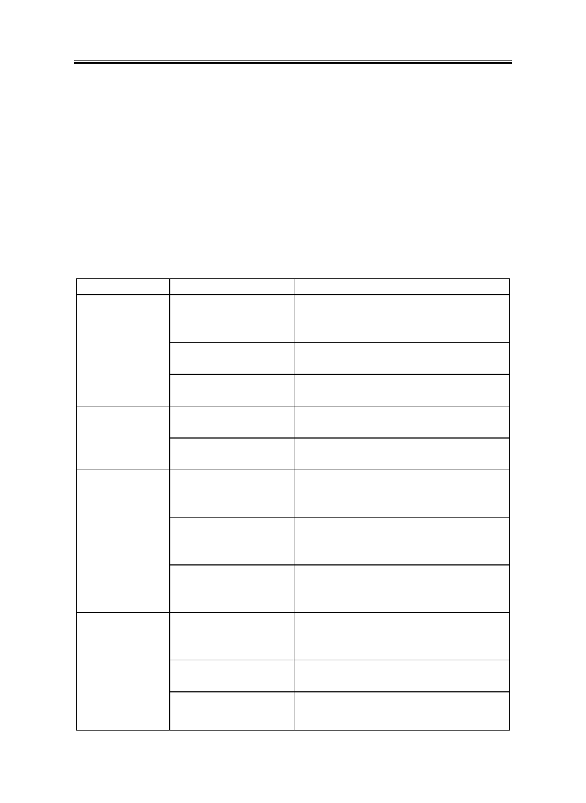
數位時代公共圖書館虛擬參考服務之發展
所具備的知能、軟技能、硬技能之相關探討（註21）（註22）（註23）；為
了確保服務品質，從資源面、讀者與館員觀點、行為研究等方式探討服務的
評鑑（註24-30）；而州際間的參考服務合作模式可以做為各館合作的借鏡
（註31）；並有對於不使用參考服務的非讀者群進行研究，以便有助於推廣
虛擬參考服務（註32）。這些議題（整理如表1）都與虛擬參考服務的發展
相關。未來國內發展虛擬參考服務之時，可以參考虛擬參考服務研究的相關
文獻，對於了解虛擬參考服務必有助益。
表1 虛擬參考服務之相關議題
議題 作者/組織/單位 內容
虛擬參考服務
建置指引
ALA RUSA 建置和維護虛擬參考服務指引（Guidelines
for Implementing and Maintaining Virtual
Reference Services）
IFLA 數位參考服務指引（IFLA Digital Reference
Guidelines）
Han & Goulding
（2003）
Information and Reference Services in the
Digital Library
使用工具
Lukasiewicz（2007） 建議可採用wiki和podcast作為累積不
同資訊來源的方法
吳美美、龐宇珺
（2011）
分析現有之圖書館參考服務網頁並建
置一個虛擬參考服務平台
館員認知與培
訓
Feili（2007） 了解虛擬參考服務館員需要具備哪些
知識與技能，才能順利使用虛擬參考
服務系統，完成虛擬參考服務任務
吳美美（
2008） 提出虛擬參考服務館員需具備有硬技
能（hard skills）、軟技能（soft skills）
與學科和圖資專業知識
吳美美、許鴻晢
（2011）
探討虛擬參考服務館員需要具備那些
知能，並設計一系列課程以培訓虛擬
參考服務館員
服務評鑑
Dewdney & Ross
（1994）
資源面和管理面的評鑑已經無法完整
反映的讀者需求，需加入專業服務行
為評鑑
吳美美（2002） 互動式資訊檢索（Interactive Information
Retrieval）評鑑
Yang, Jun & Peterson
（2004）
利用民族誌內容分析法研究線上購物
者對於線上服務系統的滿意度
7
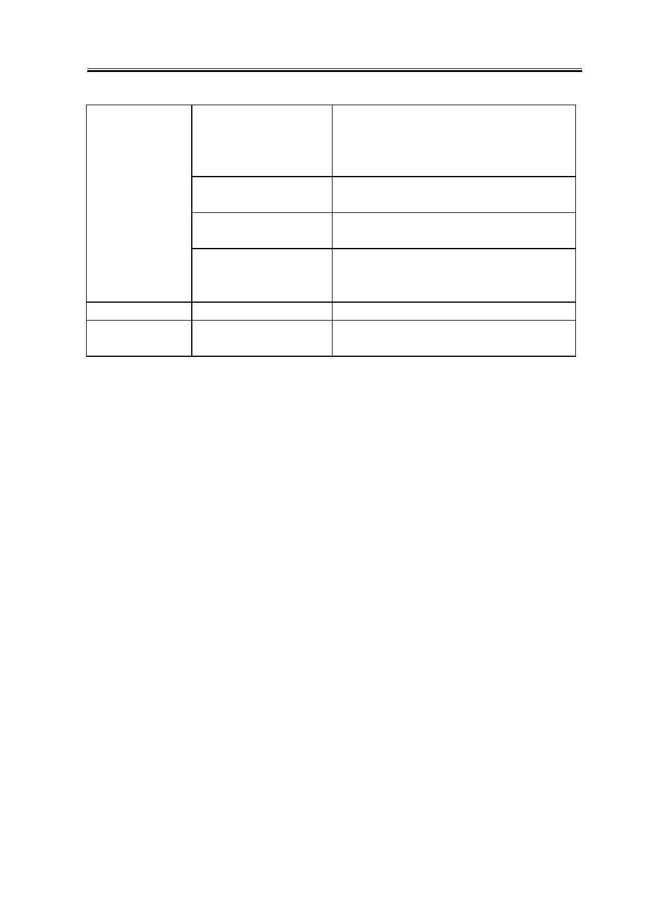
臺北市立圖書館館訊 29卷2期
Shachaf & Horowitz
（2008）
虛擬參考服務評鑑，可使用和傳統參
考服務評鑑類似的項目，例如評鑑研
究的重心在於參考問題、正確性、完
整性、實用性，以及讀者滿意程度
Pomerantz（2008） 從館員和讀者的觀點討論線上參考服
務評鑑
Shachaf,Oltmann &
Horowitz（2008）
不同族群的使用者使用數位參考服
務，對於品質的感受是否有所不同
吳美美、魏曉婷、許
鴻晢（2010）
依據各式參考服務的評鑑方式，提出
三個虛擬參考服務的評鑑面向，並設
計虛擬參考服務之評鑑工具
合作參考服務 Cheng（2008） 州際虛擬參考服務合作
非使用者研究
Connaway, Radford &
Dickey（2008）
調查非使用者（Nonusers）不使用虛
擬參考服務的原因
資料來源：本文補充吳美美（2008）整理
肆、如何發展虛擬參考諮詢服務
要推展虛擬參考服務有幾項重要的工作，包括：了解環境以及讀者需
求、確定資源，妥善準備數位參考資源，提升館員的數位科技熟練程度與數
位資源的認識，資訊傳播科技平台系統設備的選擇和配合，發展虛擬參考服
務指引規範，以及研擬虛擬參考服務評鑑項目。以下分述之：
一、了解環境、讀者需求、確定資源
首先應了解圖書館的地理位置和網路便利程度，圖書館是否屬於都會
區？讀者是否傾向親自到館詢問問題？如果是都會區，讀者可能受到較多繁
雜事務耽擱，有可能上網詢問問題的機會比較多。如果是偏鄉，但是網路發
達，讀者也可能上網詢問問題。反而有些社區型的公共圖書館，讀者傾向到
館使用圖書館服務，也許發展虛擬參考服務可能就並不是迫切的需求。
另外需要考慮的是圖書館的直屬管理單位支持這項服務嗎？是否可以
提供經費和必要的組織改造和人員培訓？虛擬參考服務除了有賴於妥善的規
劃，更重要的要有充分的資源。例如麻省理工學院（MIT）、芝加哥大學以
及密西根大學皆因為出現使用量不足、缺乏經費、以及時間無法配合等因
素，而永久或不定時關閉即時的虛擬參考服務，轉向使用email等方式進行
8

數位時代公共圖書館虛擬參考服務之發展
參考服務（註33）（註34）。這些學術圖書館的發展明顯受到資源分配的限
制。因此發展虛擬參考服務，需要注意需求和資源的取得。
二、妥善準備數位參考資源
在傳統的參考服務台，各類常用的參考資源就放置、分布在館員四周
的工作台，十分便於取用。館員的工作台上還備有各學科常用工具書的簡易
索引，以供參考翻閱。在數位時代，數位參考資源要如何編排，以利參考館
員查找，是十分重要的準備工作。分析目前國內圖書館的網路電子參考資源
的排列，大約分為三種類型：「一目了然」型，將電子參考工具書按類一一
列出；「表列說明」型，將資料庫按名稱列表，並敘述使用說明；「混合」
型，亦即列出電子參考資源清單，其中部分的參考工具有加註使用說明。不
論是哪一種電子參考資源的呈現方式，都應該要清楚明瞭，考量可以讓館員
順手、易查，快速選擇自己所需要的參考工具。
三、提升館員的數位科技熟練程度與數位資源的認識
培養館員的虛擬參考服務知能，分析傳統參考諮詢服務和虛擬參考諮詢
服務所需要的知能，其中科技技能、人際技能、溝通理論、管理技能、社會
責任、社群經營是兩種參考諮詢服務所共同需要的知能，而虛擬/數位/線上
參考服務則另外需要提供虛擬空間管理、整理並分類數位資源、了解數位教
學物件/資源的知識、以及擔任線上學習指導者等重要的知能。
由於國內之虛擬參考服務尚未有通用的服務流程，就是連服務項目也
尚待標準化，因此研究者曾在2010年進行虛擬參考服務之研究，運用遠距講
授，以及角色扮演的模擬練習，設計一系列的虛擬參考服務培訓課程。課程
內容參考「美國圖書館學會」（ALA）RUSA出版的＜參考及資訊服務提供
者應有之行為表現指引＞（Guidelines for Behavioral Performance of Reference
and Information Services Providers）和「國際圖書館聯盟」（IFLA）出版的
＜數位參考服務指引＞（Digital Reference Guidelines）中所建議的館員須
知，並參酌相關文獻（註35-38）所建議的知能，包括系統使用的硬技能和
線上溝通的軟技能等，來進行培訓課程規劃。
9

臺北市立圖書館館訊 29卷2期
該項培訓課程的研究報告發表於＜虛擬參考服務館員遠距線上同步培
訓課程之實施與回饋＞一文中，訪談志願館員對培訓課程的看法，志願館員
表示在從事圖書館工作的經驗中，很少對新進館員進行職前培訓，必須從工
作中累積經驗（註39）。由於虛擬參考服務與圖書館一般工作的項目較不一
樣，必須學習新的資訊科技技能，服務虛擬讀者的互動方式也跟服務實體面
對面讀者以及電話讀者有所差異。因此，研究中大多數的志願館員表示虛擬
參考服務的培訓課程十分重要，館員們的回饋對於往後國內虛擬參考服務的
規劃與執行實有莫大幫助。
四、資訊傳播科技平台系統設備的選擇和配合
在進行虛擬參考服務時，除了使用電子郵件、聊天室、視訊平台，共
同瀏覽網頁等同步和非同步的工具之外，也有研究者建議採用wiki和podcast
（註40）。在進行虛擬參考服務評鑑時，則須要存有下列六項的紀錄作為品
質指標：可信、回覆時間、完整、容易使用、安全以及產品紀錄（註41），
在這些需求之下，虛擬參考服務平台應有能夠留下這些紀錄的功能。蘇小鳳
亦在《即時數位參考諮詢服務》（註42）一書中整理了數位參考諮詢服務軟
體應具備之十大基礎特色：聊天、預置訊息、來訪提示、排序管理、網頁推
播、共同瀏覽、陪同、統計與報告、諮詢過程記錄管理、無障礙空間。書中
也提及了美國佛羅里達大學選購網路聊天參考服務軟體團隊的五個選購建議
考量：使用者介面、行政特色、館員專用介面、花費與執照以及系統本身等
五個面向。
過去研究者由＜虛擬參考服務平台功能探究＞研究的形成性評鑑中，
得知讀者認為使用語音與參考館員進行晤談並獲得所需資料，確實可以提
高服務品質；而館員亦認為共同瀏覽等方式更能幫助指引讀者找尋資料，從
這些回饋可以得知，具有視覺與聽覺同步功能的平台能夠對虛擬參考服務
有加分的效果（註43）。然而圖書館礙於有限的經費與人力，很難自行設
計一個虛擬參考服務的系統軟體，因此，現有的視訊會議軟體或許是除了
QuestionPoint系統之外，較好的虛擬參考服務系統解決方案，表2比較臺灣
現在較多人使用的視訊會議系統：JoinNet、Adobe Connect、Co-Life。
10
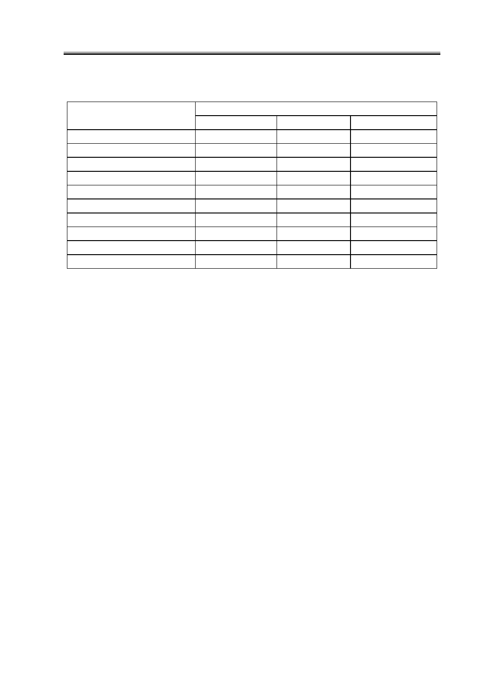
數位時代公共圖書館虛擬參考服務之發展
表2 視訊會議軟體比較
功能
名稱
JoinNet Adobe Connect Co-Life
文字交談 O O O
語音交談 O O O
視訊畫面 O O O
電子白板 O O O
文件分享 O O O
共同瀏覽網頁 O O X
遠端桌面控制 O O O
自行設定版面配置 X O X
不須下載軟體直接使用 X O X
會議內容錄影 O O O
資料來源：本研究整理（O：表示具備此功能；X：表示不具備此功能）
JoinNet是付費的即時線上視訊會議系統，為用戶提供即時多人多點影
音多媒體通訊服務。用戶可以在任何時間地點與客戶、同事或親朋好友進行
聊天、會議或協同作業等。Adobe Connect的前身為Macromedia Breeze，是
具有高互動性的全球線上會議系統，在臺灣已有多家高科技製造業及大專院
校採用。透過線上視訊、影音以及多媒體教材分享進行同步會議，由於其技
術核心為Flash，因此使用端不需額外安裝軟體，只需準備一台可以連上網
路的電腦、麥克風與網路攝影機，就可參與遠距同步會議。Co-life是由
國家
高速網路與計算中心（NCHC）所開發，可以提供2~29人以上同時於網路上
進行視訊會議或演講，可同步使用電子白板、桌面、文字等即時訊息。
從表2可以得知，視訊會議軟體皆具備有文字、語音視訊交談功能，且
都有電子白板與文件分享之功能，十分符合虛擬參考服務進行之需求，而遠
端桌面控制可以幫助不熟悉系統的讀者排除電腦問題，會議錄影可供服務評
鑑之用。但在版面配置部分，除Adobe Connect系統外，皆無法依照圖書館
需求進行設計，且須下載特定軟體方可使用，在選用時可以多做考量。
在虛擬參考服務平台功能探究研究中，研究者同時根據國內外圖書
館虛擬參考服務網頁所提供的功能服務來規劃虛擬參考服務研究室的頁面
（http://ntnuvrs.blogspot.com/），虛擬參考服務研究室的網頁上主要是提供
遠距視訊線上會議系統，讓館員及讀者可同步在線上進行虛擬參考服務，系
11

臺北市立圖書館館訊 29卷2期
統功能包括可進行打字、語音、視訊、互傳檔案、共同瀏覽擷取畫面、共同
瀏覽網頁、畫面共享、遠距離操控等功能，虛擬參考服務研究室網頁也有提
供嵌入網頁式的Windows Live Messenger即時通訊軟體，讀者可以和館員利
用打字功能交談，還有提供非同步CBox留言版功能，因為遠距的虛擬參考
服務有很多的未知性，如果館員和讀者在使用遠距視訊線上會議系統時發生
任何問題，便可配合和使用即時通訊軟體及留言版來進行聯繫（註44）。此
虛擬參考服務研究室平台雖為實驗研究而設計，也十分歡迎圖書館加以利
用，未來更可以組成參考服務館員聯盟，使雛形的研究用平台，可以轉為服
務實務的實用平台。
圖書館內的硬體配置和服務地點也是進行虛擬參考服務需要考慮的重
點。由於進行虛擬參考服務時需要運用到遠距會議軟體，因此需購置電腦器
材並進行網路設定；選擇適當、安靜的場地作為虛擬參考服務的場所，則能
讓館員專心、安心提供線上服務。舉例來說，選擇遠距會議工具時，因館員
端的設備或許與讀者端不同，且讀者不一定具有特殊的遠距會議裝置，因此
盡量選擇不需配合特定硬體的軟體工具；而電腦器材部分，除電腦、鍵盤、
滑鼠外，為能與讀者進行語音對談，應備有耳機與麥克風，若有充足經費，
更可添購網路攝影機，達到更良好的互動效果。由於研究者在先前研究時曾
訪問一位虛擬參考館員，該館員表示由於虛擬參考服務館員是坐在館內之參
考諮詢櫃台，在使用語音對談時可能會影響到館內讀者，因此即使添購了視
訊會議軟體，也僅能使用文字交談，是十分可惜的。因此在選擇虛擬參考館
員之座位時，應考量服務期間若使用語音設備，其聲音是否會影響館內其他
讀者。因此可以考慮設置一獨立空間，作為虛擬參考服務之場所。
五、發展虛擬參考服務指引規範
在發展虛擬參考服務前，應先釐清服務的目的與對象，並訂定符合圖書
館能力和讀者需求的規範。ALA RUSA與IFLA皆針對虛擬參考服務的規劃
提供了一些建議，這兩個組織皆認為在工作手冊中應包含組織辦法、軟硬體
設備、服務項目、服務時間、服務規章、館員培訓、行銷、服務倫理、服務
評鑑等項目（註45）（註46）。
12

數位時代公共圖書館虛擬參考服務之發展
Han與Goulding的＜數位圖書館的資訊與參考服務＞一文中認為館方若
能先分析並了解讀者的需求，會有助於規劃虛擬參考服務。一般而言，讀者
的資訊需求依照其專精與了解程度，可分為三個層次：L1—層次一，普通
的，幾乎是所有讀者的需求和期望；L2—層次二，某一部分特定讀者的需
求，例如大學生、研究生、研究員；L3—層次三，屬於個人需求，限於特
定的問題。目前公共圖書館以服務一般民眾為主，即是以層次一的讀者群做
為服務重點，因此在規劃指引規範前，也應以此類需求做為主力（註47）。
吳美美（註48）建議各館在發展虛擬參考服務前，可以先研擬虛擬參
考服務的規畫書，此規畫書應包括以下內容：1.行政組織，經費來源、2.組
織人員、3.軟硬體、4.行銷策略—須先決定服務對象、5.館藏發展—須先進
行資料庫資源認識、6.服務公告草擬，包括任務宣言、服務範圍、服務時間
等、7.研擬服務手冊，包括溝通要領及經常使用的專業制式語言、系統操作
技術熟練度、注意隱私、8.評鑑，應包括立即評鑑/用後評鑑（評鑑表設計）
和績效/成效評鑑（決定評鑑目的和評鑑面向），以及使用者研究。
六、研擬虛擬參考服務評鑑項目
規劃服務評鑑項目是提升參考諮詢服務的重要方法。評鑑的目的在於
了解參考諮詢服務過程和服務結果是否有回答讀者的問題、服務的狀況，以
求改善與提升參考服務的品質。在虛擬參考諮詢服務的環境中，服務品質受
到資源、晤談互動，以及虛擬環境、資訊科技系統的設備之影響。進行評鑑
時，評鑑者必須決定什麼是最好的資料收集工具，包括調查、訪談或日誌
等。評鑑結果會包含許多數據資料，而數據資料的呈現，應該要有所選擇，
評鑑時應避免評鑑者的偏見。進行評鑑時，不管利用何種方式實施，都應該
要有一些基本的注意事項。Pomerantz（註49）（註50）認為評鑑時須注意
兩大重點：第一，哪些個體與團體是線上參考服務關係人？包含館員、圖書
館管理者、讀者、地方政府官員、投資贊助者與其他。第二，什麼樣的標準
與政策會決定服務的成敗？成功的標準包含傳送問題的數量、每一時間回答
問題的數量、提供回答的速度、其他會影響與讀者溝通的因素、此服務如何
傳達給新讀者以及已存在的讀者與其他人等。因此虛擬參考諮詢服務評鑑在
13
臺北市立圖書館館訊 29卷2期
實施時，除了進行的方式與參照的指標很重要之外，參與的人員、團體以及
標準也都是必須要注意的事項。
Janes（註51）認為數位參考評鑑要注意以下九項評鑑指標：1.正確性：
答覆的正確性和完整性、2.收到和回覆的問題數：作為服務使用量和服務品
質的評鑑、3.滿意度、4.回覆的時間：由回覆的時間找到延遲的原因和改進
的方法、5.問題的種類：依主題分類、或依服務類型分類（即時性問題、研
究型問題、指導型問題… 等、6.使用者的類型：本地/外地、學生/教師/上班
族、個人/團體、7.重複的使用者：個人重複使用次數，以及多少比例的使
用者會重複使用、8.新使用者：他們從哪裡來？每星期/月/年有多少新使用
者？9.成本費用：整體花費、每個問題/每位使用者的花費。這九項評鑑指標
進一步可以從讀者面（1, 3, 4）、績效管理面（2, 5, 6, 7, 8, 9）加以歸納，可
以作為讀者使用後的問卷項目，也可以作為參考服務內部績效管理的評鑑項
目。
在＜虛擬參考服務評鑑指標的三個面向＞一文中（註52）中，研究者
認為傳統參考服務評鑑的指標，以參考答案的正確性和完整性的資源面考量
之外，再加上讀者和參考館員的參考晤談過程，以及讀者的線上系統使用經
驗之感受的評量，可以形成一個虛擬參考服務評鑑較完整的評鑑架構，並運
用此評鑑架構，實施虛擬參考服務評鑑，收集讀者前、後問卷和志願館員日
誌，並加以分析；研究結果顯示此三個面向的虛擬參考服務評鑑指標，包括
資源面、互動晤談面、系統面，十分切合虛擬參考服務關切之系統面與關切
讀者參考問題，而非僅止於參考資源的提供，表達對讀者資訊需求的全面關
懷，此三個面向的虛擬參考服務評鑑指標，適合未來虛擬參考服務評鑑所使
用。
伍、結論與未來展望
身處數位環境中，網路的發達、數位出版的興起、社會參考的流行、以
及使用者的改變都是促使圖書館創新求變的推手。在執行虛擬參考服務前，
事前的規劃與評估十分重要，需要先了解圖書館的地理位置的特質、實體與
網路環境的狀況，針對讀者的需求提供他們所需要的參考服務類型，確定館
14
數位時代公共圖書館虛擬參考服務之發展
內能提供的支援與資源，除了豐富的實體參考資源，同時亦要妥善準備數位
參考資源，以滿足虛擬讀者的需求，因為虛擬參考館員所需的知能比傳統參
考服務更具挑戰，需要使用數位科技的工具和方法，沒有受過培訓的參考服
務館員很難扮演好虛擬參考服務館員的角色，提升現職館員的數位科技熟練
程度與數位資源的認識十分重要。目前圖書館並沒有專門的虛擬參考服務系
統，要選擇適合圖書館的資訊傳播科技系統設備，虛擬參考服務指引規範的
研擬是影響虛擬參考服務執行成效的重要因素，參考服務評鑑則能讓服務日
新又新。除了上述的條件之外，虛擬參考服務的推行，還需要圖書館提供相
關之行政支援，如經費、數位環境、政策等配合。更加期盼的是，未來規劃
實施虛擬參考服務時，基於各館已經準備妥當的堅實基礎，國內合作虛擬參
考服務可以順利運作。
致謝
本文為國科會研究計畫（計畫編號：NSC98-2410-H-003-111）之部分研
究結果，感謝國科會贊助計畫經費。並感謝志願參考館員及匿名志願讀者參
與研究，你們是pioneers！
註釋
註1：International Telecommunications Union, ITU, 10 September 2010, <http://
www.itu.int/ITU-D/ict/statistics>(10 September 2010).
註2：吳美美、龐宇珺，「虛擬參考服務平台功能探究」（臺北市：臺灣師
範大學圖書資訊研究所，民100年）國科會專題研究計畫成果報告
NSC98-2410-H-003-111。
註3：Aardvark, Aardvark., 26 September 2011 ,<http://vark.com/home >
(accessed September 26, 2011).
註4：Marc Prensky, “Digital Natives, Digital Immigrants,” On the Horizon 9:5
(October 2001): 1-6.
註5：Marianne Steadley, “Digital Native or Digital Immigrant: Exploring Ways
to Bridge the Generational Divide in the Library, ”2006, <http://www.
15
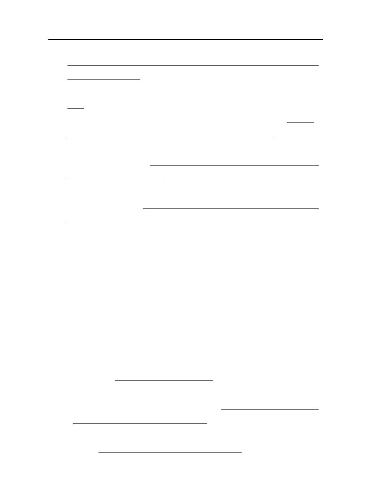
臺北市立圖書館館訊 29卷2期
cpcc.edu/cpcc/millennial/presentations-workshops/faculty-or-all-college-
workshop/instructions>(10 September 2010).
註6：吳美美，「朝向小眾化與專業化的虛擬參考服務」，臺灣圖書館管理
季刊4卷4期（民國97年10月）：頁9-23。
註7：Yungrang Laura Cheng, “Virtual Reference Services Introduction,”Bulletin
of the American Society for Information Science and Technology 34:2(2008).
註8：R. David Lankes, Ed., Charles R. McClure, Ed., Melissa Gross, Ed. and
Jeffrey Pomerantz, Ed., Implementing Digital Reference Services: Setting
Standards and Making It Real (New York: Neal-Schuman Publishers, 2002).
註9：Question Point, “24 7 Coop FAQs - What Libraries Belong to the Cooperative,”
29 September 2010, <http://wiki.questionpoint.org/w/page/13839418/24%20
7%20Coop%20FAQs> (29 September 2010).
註10：吳美美、魏曉婷、許鴻晢，「虛擬參考服務評鑑指標的三個面向」，
圖書館學與資訊科學36卷2期（民國99年10月）：頁71-92。（國科會
專題研究計畫成果報告，NSC98-2410-H-003-111）
註11：吳美美，「虛擬參考服務的問題類型研究」（臺北市：臺灣師範大
學圖書資訊研究所，民國100年）國科會專題研究計畫成果報告，
NSC 98-2410-H-003-111。
註12：同註2
註13：同註11
註14：同註6
註15：Robert S. Taylor, “Question-Negotiation and Information Seeking in
Libraries,” College & Research Libraries 29:3 (1968): 178-194.
註16：ALA RUSA, “Guidelines for Implementing and Maintaining Virtual
Reference Services,” 10 September 2010. <http://www.ala.org/ala/mgrps/
divs/rusa/resources/guidelines/index.cfm>(10 September 2010)
註17：IFLA, “Reference and Information Services Section,”10 September
2010. <http://www.ifla.org/VII/s36/pubs/drg03.htm>(10 September 2010)
註18：Lifeng Han and Anne Goulding, “Information and Reference Services in
16
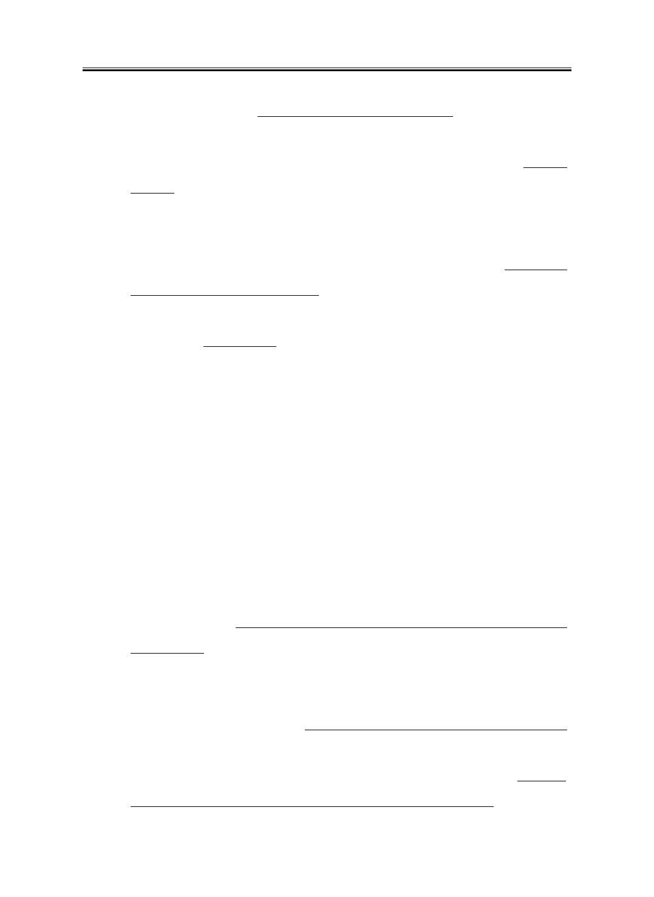
數位時代公共圖書館虛擬參考服務之發展
the Digital Library,” Information Services and Use 23 (2003): 251-262.
註19：Adrianna Lukasiewicz, “Exploring the Role of Digital Academic Libraries
Changing Student Needs Demand Innovative Service Approach,”Library
Review 56:9 (2007): 821-827.
註20：同註2
註21：Feili Tu, “Knowledge and Skills Required to Provide Health Information-
Related Virtual Reference Services: Evidence from a Survey, “Journal of
the Medical Library Association 95:4 (2007): 458-461.
註22：吳美美、許鴻晢，「虛擬參考服務館員遠距線上同步培訓課程之實施
與回饋」，大學圖書館15卷1期（民國100年3月）：頁19-40。（國科
會專題研究計畫成果報告，NSC 98-2410-H-003-111）
註23：吳美美，「資訊檢索互動中的讀者和中介者發問行為研究（III/III）」
（臺北市：臺灣師範大學圖書資訊研究所，民國91年）國科會專題研
究計畫成果報告，NSC 89-2413-H-003-079。
註24：Patricia Dewdney & Catherine Sheldrick Ross, “Flying a Light Aircraft:
Reference Service Evaluation from a User's Viewpoint,” RQ 34:2(1994):
217-231.
註25：同註23
註26：Zhilin Yang, Minjoon Jun & Robin T. Peterson, “Measuring Customer
Perceived Online Service Quality: Scale Development and Managerial
Implications,” International Journal of Operations and Production
Management 24:11(2004): 1149-1174.
註27：Pnina Shachaf & Sarah M. Horowitz, “Virtual Reference Service
Evaluation: Adherence to RUSA Behavioral Guidelines and IFLA Digital
Reference Guidelines s,” Library & Information Science Research
30:2(2007): 122-137.
註28：Jeffrey Pomerantz, “Evaluation of Online Reference Services, “Bulletin
of the American Society for Information Science and Technology 34:2(2008):
15-19.
17
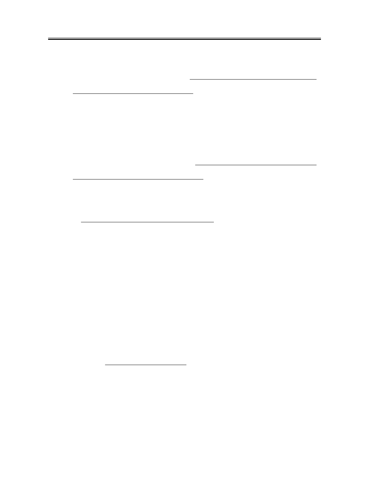
臺北市立圖書館館訊 29卷2期
註29：Pnina Shachaf, Shannon M. Oltmann & Sarah M. Horowitz, “Service
Equality in Virtual Reference, “Journal of the American Society for
Information Science and Technology 59:4(2008): 535-550.
註30：同註10
註31：同註8
註32：Lynn Silipigni Connaway, Marie L. Radford & Timothy J. Dickey,
“On the Trail of the Elusive Non-User: What Research in Virtual
Reference Environments Reveals, “Bulletin of the American Society for
Information Science and Technology 34(2008): 25-28.
註33：Marie L Radford & M Kathleen Kern, “A Multiple-case Study
Investigation of the Discontinuation of Nine Chat Reference Services,
“Library & Information Science Research 28:4(2006): 521-547.
註34：不過目前這些學術圖書館是否已經恢復同步線上參考服務，本研究
未進一步查證。
註35：同註6
註36：同註16
註37：同註17
註38：同註21
註39：同註22
註40：同註19
註41：同註26
註42：蘇小鳳，即時數位參考諮詢服務（臺北市：文華，民國94年）。
註43：同註2
註44：同註2
註45：同註16
註46：同註17
註47：同註18
註48：同註6
18
數位時代公共圖書館虛擬參考服務之發展
註49：同註28
註50：同註10
註51：Joseph Janes, Introduction to Reference Work in the Digital Age(New
York: Neal-Schuman, 2003).
註52：同註10
19

臺北市立圖書館館訊 29卷2期
行動時代的圖書館社群數位參考服務
Library Social Digital Reference Service in the Mobile
Era
黃明居
Ming-Jiu Hwang
國立交通大學副教授兼任圖書館副館長
Associate Professor and Deputy Director of Library,
National Chiao Tung University
【摘要】
行動化技術的快速變革已使人們無時無刻藉由行動裝置緊密在一起，導
致讀者獲取與傳送資訊的時間與地點都產生了變化。圖書館參考服務因應此
趨勢，需跳脫目前參考服務之型態，把握契機，推出符合讀者需求的嶄新參
考服務。本文提出「行動化社群數位參考服務」的概念與執行方式，結合行
動化館員、行動化讀者與行動化內容，期待對國內圖書館在嚴重缺乏人力資
源的情況下有所助益，並且讓讀者體驗無所不在的圖書館數位參考服務。
【Abstract】
Rapid change of mobile technology has tied people with the mobile device
all the time. The time and location for readers to obtain and pass information were
changed accordingly. The reference service of library shall also adapt this trend,
breakthrough current service pattern to seize the opportunity and provide a new
reference service that accommodates the demands of readers. The Mobile Social
Digital Reference Service (MSDRS) proposed in the article had mobilized the
librarian, readers, and the contents in expect to mitigate the problem of insufficient
20

行動時代的圖書館社群數位參考服務
human resource for libraries in Taiwan as well as provide the ubiquitous digital
reference service for the readers.
關鍵字：數位參考服務、行動化社群數位參考服務、行動圖書館
Keywords: Digital Reference Service, Mobile Social Digital Reference Service,
Mobile Library
壹、緒論
近年來行動化裝置，如智慧型手機、平板電腦等產品的普及與競爭，加
速行動化技術的變革；另一方面，配合無線通訊環境逐漸成熟，電信費率降
低，國人使用行動裝置上網人口遽增。根據我國NCC與資策會統計資料顯
示，至民國100年6月，我國行動上網帳號數目已達2,059萬（註1）。讀者攜
帶行動化裝置，無時無刻緊密在一起，導致讀者獲取與傳送資訊的時間與地
點都產生了變化。許多讀者於排隊等候時間，透過行動裝置，提出了某些問
題；相對於社群中的另一端讀者，透過行動裝置，馬上回覆該朋友的問題，
此時她可能同時陪伴家中的小孩一起在玩遊戲或看電視。
行動裝置設計的便利性，改變人類許多生活方式，尤其是資訊的溝通傳
達與閱讀。其中包括年長的銀髮族，亦將平板電腦（如iPad）視為生活的一
部分，台積電董事長張忠謀先生多次於公開場合使用iPad為最佳的例證（註
2）。另一方面，社群化的搜尋（Social Search）也很「自然」的在行動化環
境中再度被重視，甚至更加的重要，如Peters於西元2011年所提的觀念（註
3）。讀者透過目前流行的線上社群網站（如Facebook），獲取問題的解
答，或者許多Q＆A平台，如Amazon Askville、Aardvark、Answerbag與國內
的「知識＋」等（註4-7），均能讓讀者透過社群的協助快速獲得解答。不
論解答的品質為何，這些平台的讀者為何如此的熱衷？國內外的平台經營得
如此成功，圖書館的參考服務呢？是否可順應此潮流，把握契機，推出符合
讀者需求與嶄新的參考服務？此為目前圖書館界所需正視的問題，亦是本文
之動機所在。
21

臺北市立圖書館館訊 29卷2期
目前國內各大學圖書館或公共圖書館都已提供同步與非同步的數位參
考服務。如同步的MSN服務或非同步的e-mail與表單填表型態，尤其同步
的MSN服務，深受一般大學生喜愛（註8）；相對而言，國內公共圖書館由
於服務對象的差異與館員人力的不足，主要以非同步的服務型態為主，如
e-mail型態（註9）。而目前的數位參考服務，無法與上述Q&A平台相比，
讀者利用圖書館參考服務的比例偏低，亦是不爭的事實。另一方面，目前的
參考服務，大多以固定的排班參考館員負責回答讀者問題。在行動化的時代
裡，是否一定需要一個固定的參考服務櫃檯與固定排班的參考館員提供參考
服務？是否可利用行動化裝置的特性與功能，提供嶄新的參考資訊服務？真
正達到無所不在的參考服務（Ubiquitous Reference Service）。（註10）
本文提出「行動化社群數位參考服務（Mobile Social Digital Reference
Service , MSDRS）」概念架構與執行方式，期待能夠激發國內圖書館界思
考其可行性與如何落實與執行。文中以實務為導向，對於數位參考服務之歷
史與理論論述部分並未作深入探討與說明，這方面國內外均有許多不錯的文
獻可參考（註11-13）。以下第二部分說明MSDRS執行時幾個重要的思維與
概念，提出為何需要跳脫傳統參考服務框架的理由；第三部分介紹MSDRS
的架構與執行方式；最後一部分為結論與建議。
貳、行動化社群參考服務思維
行動化的環境裡，需要有許多的創意與創新的思維，才可展現與發揮
行動化的特性。交大圖書館最近試行了行動化的服務（mLibrary），包括提
供智慧型手機版本的資料庫檢索、影音服務等（註14），規劃與設計的過程
中，最常自我提問的是：「行動裝置都已經能夠上網，有需要再花費心思與
成本提供不同的服務嗎？」直到蘋果公司推出iPad的廣告才體會到，科技真
的是需要來自人性，不是一個廣告詞，而是真正做到了。強調的不但是技術
的革新與創新，更重要是：讓使用者使用時是那麼「自然」，即所謂的「人
性化」（註15）。
而圖書館的參考服務呢？是否也可以讓讀者遇上問題，很「自然」的
詢問圖書館參考館員？這需要有創新的思維或措施。Arndt學者於西元2011
22
行動時代的圖書館社群數位參考服務
年提出「參考服務無需櫃檯」的想法（註16）、Peters學者於同一時間提出
「參考服務無需排班、提供24小時服務與10分鐘內必須有所回應」等新思維
（註17）均值得參考。但這些新的想法，是否也適合國內圖書館的服務？無
論是否可行，其共通點是：「需要跳出目前的框架與服務型態」，提出不同
的想法與作法。以下分析行動化環境所帶來的影響以及行動化館員必須具備
的思維。
一、行動化環境的影響
行動化的環境裡，常見的景象是：「人們充分利用零碎的時間」。無
論在任何地方，排隊等公車、等朋友或其他等待時間，即可見到人們手持行
動裝置，使用靈活的手指在面版上揮灑。不論行為的好壞，行動化裝置已經
改變了人們許多的行為，讓每個人很「自然」的與該裝置緊密結合，真正
達到「無所不在（Ubiquitous）」境界，讓人們習慣地拿起行動裝置「玩一
下」。
另一方面，行動化的環境，更加縮短了人們溝通與傳達資訊的時間。
過去透過個人電腦與網路同樣可做到，但行動化裝置的設計便利，無需開關
機，無需作複雜設定，一個按鈕即可完成。雖然差異僅「幾十秒」，但感受
不同，其方便性讓人更喜歡使用它，尤其是瀏覽與閱讀或是簡單的文書工
作。因此，當人們想獲得某項資訊，尤其是在戶外，如路況，天氣或加油站
等訊息時，第一個念頭不是打電話，而是使用行動裝置，這是過去只能夠使
用電話詢問所無法做到的，真正落實了「任何時間，任何地點，無時無刻取
得與傳送資訊」。
二、行動化的參考館員與服務品質
行動化環境所「自然」產生的「無所不在（Ubiquitous）」特性，圖書
館參考服務的工作，如何善加利用與發揮？首先需思考的問題是：參考館員
是否已經感受到此項特質？是否具備行動服務的熱忱，隨時隨地準備服務讀
者？進而考慮一個關鍵的問題，是否一定需要在固定的參考櫃檯，固定的排
班時間服務？（註18）。若賦予參考館員為一「行動化參考館員」，攜帶著
23

臺北市立圖書館館訊 29卷2期
行動化的裝置，於任何時間、任何地點均可提供參考服務的工作（在此強調
的是：非上班時間也願意利用零碎時間提供服務的行為），這將可增加許多
服務的彈性與效率。
另一方面，除了參考館員可扮演行動化參考館員的角色外，是否可讓
網路上的專業人員也加入這項行列？這問題牽涉到過去圖書館界常討論的課
題：「參考諮詢服務的品質問題」。但試問：目前盛行的Q&A平台中，數
以萬計的平台會員，都是專業的參考館員嗎？雖然圖書館界所提倡的是需要
具備專業智能的參考館員才可參與此項服務，但是目前新興知識之多元與廣
大，已經不是參考館員所能夠勝任的。另外，在行動化環境中，「即時回
覆」應是重要的關鍵因素，透過行動化的溝通，即使第一次回覆的答案不盡
理想，但經過社群中的即時互相討論，應該可在很短的時間裡得到讀者滿意
的答案。最差的狀況下，最後由負責的專業的參考館員再做最後的檢驗。
三、行動化的內容與雲端式服務平台
由於行動環境中所使用的網路環境與裝置，相較於目前有線網路環境與
硬體設備均較輕薄，傳輸效能較差；因此，目前以傳輸「文字」內容為主；
另一方面，提供服務的應用軟體亦扮演關鍵的因素，需要提供類似雲端式的
服務平台，儘量讓讀者端的行動裝置執行簡單的應用程式，高運算或需要硬
體資源較多的服務，都在雲端執行，讓讀者能夠可以透過無線網路，有效率
的完成工作。因此，未來於行動環境實施的參考服務中，需考量到「內容」
與「傳輸效率」等因素，更須提供具備良好效率與方便使用的雲端服務平
台。
由上述內容可知，在行動化的環境中，需要更具彈性與專業的行動化館
員，結合網路社群的力量，配合行動化的內容與雲端式的服務平台，很自然
地產生社群互助與合作行為之服務方式，亦是下節所提出的行動化社群數位
參考服務模式。
24

行動時代的圖書館社群數位參考服務
參、行動化社群數位參考服務(MSDRS)
本文所提出的MSDRS模式，緣起於合作式數位參考服務（Cooperative
Digital Reference Service, CDRS）的概念，配合上述行動化環境的特質與思
維，自然而產生的模式。為何需要「合作」執行參考服務的工作？如上節所
述，網路社群本身自然具備「合作」的特質；另一方面，在國內公共圖書館
專業館員與資訊人員嚴重不足的困境下，利用「合作」的方式與執行策略，
為一良好解決方法之一。當然，良好的合作模式與執行方式設計亦是重要的
關鍵因素。以下說明MSDRS之概念架構與設計：
一、MSDRS架構
西元2000年OCLC所提出的CDRS架構如圖一所示（註19）。MSDRS的
架構與其相似，但概念上有許多不同之處：
（一）合作對象由「社群」成員組成：由於行動化環境的特性，負責的參考
館員無需隸屬於結構性的組織中，而是以「主題社群」為主（如圖一
中的小圈圈），視參考館員的專長與興趣而定，可參與多個社群，而
不以區域來區隔。若遇上區域性的問題，無人認養回答時（若以10分
鐘需回覆為目標），由負責該社群的館員直接以行動通訊的方式詢問
區域館員即可解決問題。
（二）無階層架構：無區域隸屬關係，即無階層架構。重複「社群」概念，
以主題性的問題為導向，以「即時回覆」讀者問題為目標。
社群之成員與負責人：為要求具優質的參考服務品質，由參考館員負
責把關，維護社群的問題回覆品質；或由網路具專業知識的「行動參
考館員」義工協助負責。對於「品質」的要求，如上述所討論，在行
動化的環境中，若能做到「快速回覆」，即使回覆品質不佳，經過社
群中行動化的快速討論後，最後應該會有詢問者滿意的出現。
25
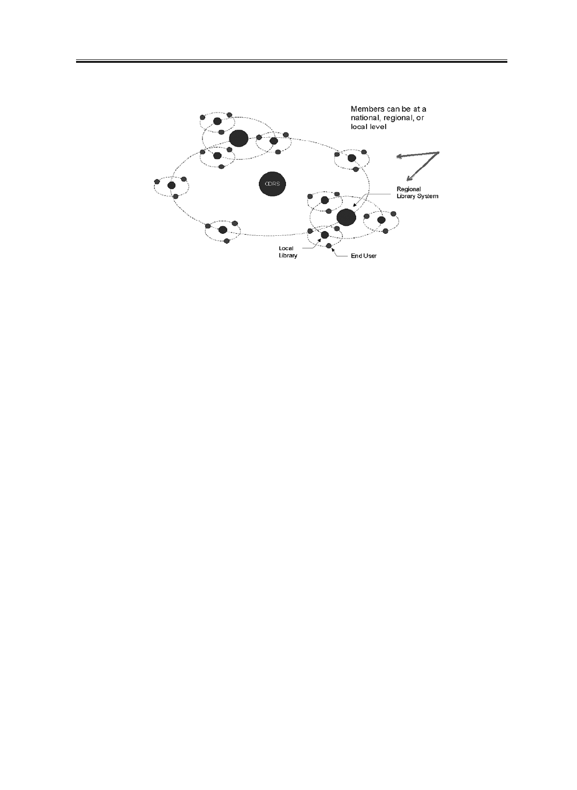
臺北市立圖書館館訊 29卷2期
圖一 合作參考服務（CDRS）架構圖 （註19）
二、MSDRS執行方式
執行MSDRS模式之關鍵，必須設計簡單好用的行動裝置應用軟體與整
合所有社群的入口平台（如前節所述之「雲端式服務平台」），讓每位使
用者，包括提問題的讀者與回答問題的行動參考館員，在行動裝置上很方便
地提問題與回答問題。另一方面，透過使用者端的應用軟體，即時迅速地串
連至入口平台，透過社群的連結，讓無數的社群使用者都能夠即時的與社群
成員溝通與傳送訊息。入口平台上顯示未回答的問題，若未回答問題超過設
定的時間（10分鐘），系統會主動push到「值班的行動館員」身上，讓他隨
時解決與回答問題，真正做到「即時」的參考服務。至於入口平台的功能設
計，可參考上述Q&A平台之設計（註20），有許多功能是值得參考，如社
群網路與分享功能等。
另外，有關圖書館間的合作與運作方式，以國內公共圖書館而言，筆
者主張入口平台與行動裝置的應用軟體，涉及龐大的經費與後續管理維護問
題，應由資源較為豐富之公共圖書館，如北市圖或國中圖負責採購完成後，
剩餘的執行面問題，由「社群」負責人負責經營，無需再分階層，讓各個社
群更具彈性與主導權，發揮行動化環境的特性與本質，以期達到「讓讀者感
受到無所不在的參考服務」。
MSDRS之
主題社群
26
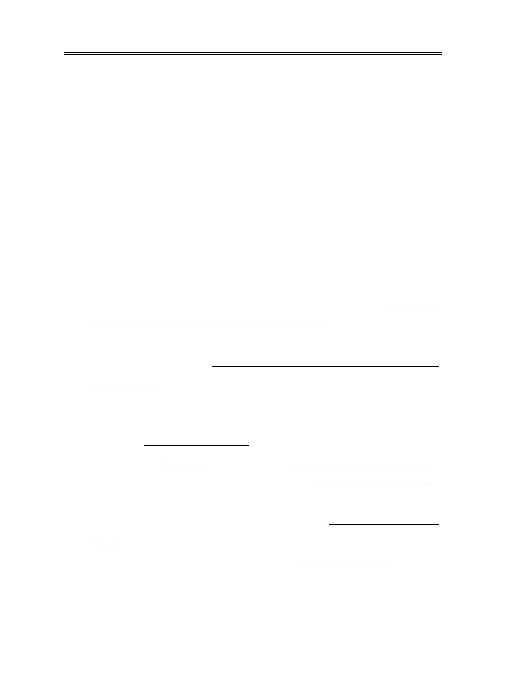
行動時代的圖書館社群數位參考服務
肆、結論與建議
行動化環境與裝置逐漸影響人們資訊尋求的行為，如何讓讀者很「自
然」地感受到圖書館的參考服務，正考驗著圖書館從業人員。在此環境中，
更需要具有創意的思維，開創更符合讀者需求的參考服務。本文所提出的
「行動化社群數位參考服務」僅為參考服務之一，無法取代目前各項的參考
服務。雖僅提出粗淺概念，但期待能夠引起迴響，執行的細節設計與規劃有
待大家共同努力，真正落實無所不在的圖書館數位參考服務。
註釋
註1：資策會，「2011年第2季我國行動上網觀測」，2011年8月18日，<http://www.
find.org.tw/ipub_monthly/past_news/20110818.htm>（2011年9月26日）。
註2：今日新聞網，「張忠謀演講自備道具iPad、電子書、智慧型手機全上
場」， 2011年9月2日<http://www.nownews.com/2011/09/02/11490-
2739967.htm>（2011年9月26日 ）。
註3：Thomas A. Peters, “Left to Their Own Devices: The Future of Reference
Services on Personal, Portable Information, Communication, and Entertainment
Devices,” The Reference Librarian 52:1-2 (January 2010): 88-97.
註4：Amazon Askville, Amazon, 26 September 2011,<http://askville.amazon.com/Index.do>
註5：Aardvark, Aardvark., 26 September 2011 ,<http://vark.com/home >
(accessed September 26, 2011).
註6：Answerbag, Answerbag, 26 September 2011 , <http://www.answerbag.
com/> ( accessed September 26, 2011).
註7：知識＋，Yahoo奇摩，2011年9月26日，<http://tw.yahoo.com/>（2011年
9月26日）。
註8：交大圖書館自從民國95年推出MSN服務後，該年參考服務之人數據增。
註9：毛明雯，「我國縣市圖書館數位參考服務之研究」，（國立政治大學
圖書資與檔案學研究所，碩士論文，民國97年）。
27
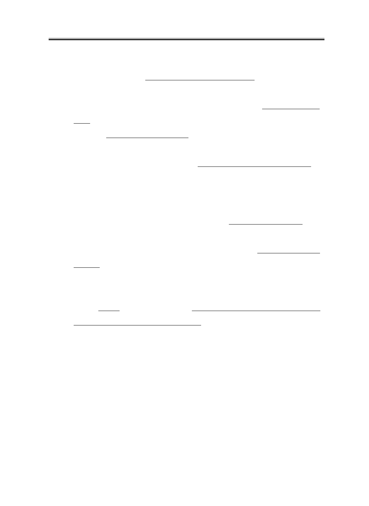
臺北市立圖書館館訊 29卷2期
註10：Fred D. Barnhart & Jeannette E. Pierce, “Becoming Mobile: Reference in the
Ubiquitous Library,”Journal of Library Administration 51:3 (March 2011):
279-290.
註11：吳美美，「朝向小眾化與專業化的虛擬參考服務」，台灣圖書館管理
季刊4卷4期（民國97年10月）：頁9-23。
註12：蘇小鳳，即時數位參考諮詢服務（臺北市：文華，民國94年）。
註13：David A. Tyckoson, “Issues and Trends in the Management of Reference
Services: A Historical Perspective,” Journal of Library Administration
51:3 (March 2011): 259-278
註14：黃明居，「行動科技在圖書館之應用，網路‧雲端‧圖書館」（臺北
市：中興大學圖書館，民國100年。圖書館系統科技暨發展趨勢研討會。
註15：Apple Web Site, APPLE, 26 September 2011,<http://www.apple.com/> (26
September 2011)
註16：Theresa S. Arndt, ”Reference service without the desk,” Reference Services
Review 38:1, (January 2010): 71-80.
註17：同註3。
註18：同註3。
註19：CDRS, ALIA 26 September 2011, <http://conferences.alia.org.au/alia2000/
proceedings/roxanne.missingham.html.>(26 September 2011).
註20：同註4、註5、註6、註7。
28

顧客導向的網路知識服務經營分析
顧客導向的網路知識服務經營分析
The Analysis of Customer Oriented Knowledge
Services Via the Internet
黃元鶴
Yuan-Ho Huang
輔仁大學圖書資訊學系副教授
Associate Professor, Department of Library and Information Sciences,
Fu Jen Catholic University
【摘要】
當此多元化社會環境，圖書館所收藏的眾多資源往往不是人們獲取知識
的首選，為強化圖書館本身的資源優勢以提供優質的知識服務，本文檢視不
同類型的知識型服務網站，以及分析460位潛在客戶於不同職業別對於知識
服務要素的重視度、各主題知識服務的利用意願等資訊，提供圖書館網站運
作機制改良及知識服務內容方向的參考，期許圖書館網站成為多數人的知識
入口。
【Abstract】
The library collection is often not the first choice when people want to find
resources nowadays. In order to promote the resource advantages of libraries and
to provide satisfying knowledge services, the study not only examined various
types of websites for knowledge services, but also analyzed the information
about importance of components for knowledge services and willingness of using
several topics of knowledge services valued by 460 potential customers. This
result could provide information for improving library websites and developing
29

臺北市立圖書館館訊 29卷2期
proper knowledge services. We expect that many people regard library websites as
their knowledge portal in the future.
關鍵詞：知識服務、顧客導向服務、網站分析
Keywords: Knowledge Services, Customer Oriented Services, Websites Analysis
壹、前言
圖書館是知識寶庫，當此多元化社會環境，圖書館所收藏的眾多資源
往往不是人們獲取知識的首選，在網路時代的環境下，若無法積極有效地運
用與行銷知識寶庫的資源，潛在客戶會優先找尋替代方案。因此，如何因應
圖書館本身的資源優勢以提供優質的知識服務，筆者曾經彙整供需雙方觀點
並提出相關建議，（註1）本文進一步分析不同職業背景的潛在客戶需求，
以及分析若干知識型網站要素，期許公共圖書館能提供顧客導向的網路知識
服務。
貳、文獻探討
顧客導向的知識服務，即針對客戶知識需求之問題解決導向式服務，臺
北市立圖書館（北市圖）於2007年推展個人化資訊服務，並於2009年進行使
用者需求與績效評估，提出下列四點建議：第一、推廣與行銷已提供之個人
化服務，提供有價值資訊；第二、定期探究讀者興趣檔項目更迭情形，主動
提供專題選粹；第三、建構雙向資訊交流之個人化資訊服務模式，定期評估
系統適用性；第四、提供整合性的個人化館藏查詢系統，滿足使用者基本需
求。（註2）前述分析北市圖現有讀者相關需求，已達顧客導向知識服務的
初步目標，但仍有非北市圖讀者的潛在客戶意見，未在前述報告呈現。因
此，本文主要呈現潛在客戶的知識服務需求以提供圖書館經營者參考。
本文潛在客戶為對圖書館服務有興趣的上網民眾，因此亦試圖探索潛在
客戶對於理想的知識型網站的使用狀況與需求。數位時代（註3）依據Alexa
臺灣區平均排名、不重複使用人數、單次造訪停留時間、單月平均使用時
間、到達率等因素，評選出2010年臺灣百大網站，本文由該網站清單挑選六
30
顧客導向的網路知識服務經營分析
個知識型網站，並參考陳文芳提出網路化知識服務平臺之需具備的要素，包
括知識庫、知識專家、社群經營、知識交易平台、數位內容、行動化等六項
要素，（註4）分析相關資訊如下：
一、Yahoo奇摩知識+ （http://tw.knowledge.yahoo.com/）
（一）知識庫：內容包羅萬象，且多為生活化的主題，但品質參差不齊。
（二）知識專家：無知識專家團隊，由網民貢獻知識。
（三）社群經營：設計個人知識網絡的「知識圈」以及初學者2級以上才可
建立的「知識團」等機制來讓知識交流能有更多互動及學習。
（四）知識交易平臺：平臺介面易於使用，且透過知識點數（http://
tw.knowledge.yahoo.com/info/points.html）的設計（類似遊戲代
幣），獲得發問者評價較高之回答，可獲得較高點數，累積較多點
數則可有發問較多次的權利。
（五）數位內容：文字為主，偶有圖片。
（六）行動化：提供手機版的網頁資訊。
二、 維基百科（http://www.wikipedia.org/）
（一）知識庫：內容相當多元，除了各種學科領域的條目之外，舉凡人物、
事件、物品等相關解釋，均由網民主動建置，亦包含加註資料來源
的格式，但若干條目之知識品質仍有待評估。
（二）知識專家：無知識專家團隊，由網民貢獻知識。
（三）社群經營：新人學習的空間，可由互助客棧可交流條目的編輯經驗；
維基人社群，透過新條目推薦、同行評審、優良條目、特色條目等
方式以提昇條目的品質，並定期分地區舉行維基人聚會以凝聚共
識。
（四）知識交易平臺：編輯介面易於使用，知識交易非以營利為目的。
（五）數位內容：該條目相關之文、圖、動畫全部為數位內容。
（六）行動化：有針對手機版的維基百科，介面較簡略，主要為檢索入口及
條目內容。
31
臺北市立圖書館館訊 29卷2期
三、 Mobile01（http://www.mobile01.com/）
（一）知識庫：網站內容主要以3C產品為主，可分為手機、PDA、GPS、筆
電、相機、電腦…等其他主題，並可透過站內搜尋尋找需要的產品
資訊。
（二）知識專家：無知識專家團隊，由網民貢獻知識。
（三）社群經營：宣稱為全球華人最受注目的3C社群網站。可獲取網民對
於3C商品的使用經驗知識，內容彙整成各種主題，讓使用者透過不
同主題的討論區，獲得所需訊息，並由個人網誌中讓使用者可以從
中發表自己的心得或瀏覽不同使用者所提供的主題資訊。
（四）知識交易平臺：採取免費註冊與年費註冊的方式，兩者差異在於後者
購物可享折扣、網誌服務、可上傳較多商品圖片到市集拍賣。另
外，由市集的入口可免費進行拍賣、交換與徵求商品，具商業行為
的網站。
（五）數位內容：網站中各主題討論區以及各項商品均附有顯示圖片，可讓
使用者在對於產品認知上有更明確的印象。另外網站中提供了手機
軟體檔案下載區，有需要的使用者可以自行下載。
（六）行動化：網站中利用二維條碼（QR code）建置行動裝置版網頁。
四、 伊莉討論區（http://www07.eyny.com/index.php）
（一）知識庫：伊莉討論區主要將內容分為：論壇、影片、部落格、百科等
主軸。論壇的主題包括休閒聊天、潮流資訊、寵物交流、電腦資
訊、感情感性、學術文化、音樂、動漫……等等，各主題下方再區
分為各個討論區；百科專區，宣稱為「圖片、音樂、自由的百科全
書」，區分為自然、文化、歷史、生活、社會、HOT……等主題。
（二）知識專家：無知識專家團隊，由網民貢獻知識。
（三）社群經營：免費註冊，其會員可以透過部落格、相簿分享本身的心得
與照片、影音並加入各種會員成立的主題團體，或透過遊戲功能與
社群中其他使用者聯絡情感。鼓勵會員在各大主題的討論區下建立
次主題的論壇區以擔任版主，並設置版主聊天室、版主會議室等以
32
顧客導向的網路知識服務經營分析
凝聚版主的共識以便訂定相關自律公約。
（四）知識交易平臺：在百科專區編輯詞條可累積「金幣」，並可以「金
幣」兌換小禮品，以鼓勵網民編輯詞條。
（五）數位內容：網站上各類主題，如：貼圖、影片、下載、美容打扮…等
網站內容都附有顯示圖片。
（六）行動化：網頁服務未特別強調手機或其他行動化裝置的特色，但其中
有一討論區為手機交流專區，提供手機使用的附件、影片、應用程
式…等資訊分享空間。
五、 台灣論壇（http://www.twbbs.tw/）
（一）知識庫：網站副標題為分享快樂網路生活，內容主要可分成：工作
（職場討論、外包接案）、休閒娛樂（電玩、音樂）、運動、電腦
網路、女性頻道、成人話題、社會人文…等各式主題。
（二）知識專家：無知識專家團隊，由網民貢獻知識。
（三）社群經營：主要以各類主題為主軸，讓會員發佈文章進行討論或從精
華區中閱覽之前其他會員所發佈的文章，另外並設有遊戲區，提供
各式小遊戲讓使用者消遣娛樂，未特別強調社群經營。
（四）知識交易平臺：會員自行分享各式主題，其他會員可自行閱覽、回應。
（五）數位內容：討論串中會員提供圖片，遊戲區較多數位內容。
（六）行動化：網頁服務未特別強調手機或其他行動化裝置的特色。
六、 愛評網(http://www.ipeen.com.tw/)
（一）知識庫：主要訴求為消費者經驗交流，分為美食、旅遊、電影娛樂、美
容美妝、手機相機、生活等主題。因此提供相關店家的精選特輯、分類
排行、愛評分享團、地圖快搜、幫會、好康優惠、口碑券……等主題，
介紹各種美食的資訊以及網友的評價，並可利用不同方式進行搜尋，
如：關鍵字、店名、美食、美妝衣飾、休閒旅遊、電影、書籍、地圖等
搜尋主題。
（二）知識專家：無知識專家團隊，由網民貢獻知識，提供客訴服務。
33
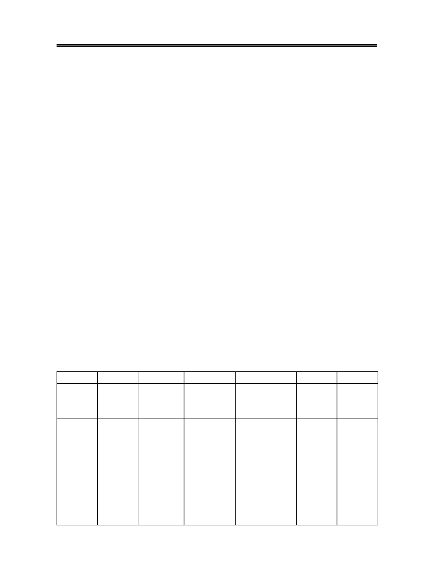
臺北市立圖書館館訊 29卷2期
（三）社群經營：網站中可透過幫會功能發表討論主題，成立若干愛評同樂
會，如FaceBook愛評粉絲團、FaceBook愛評好康、Plurk愛評噗奴、愛評
小玩意兒等，以加強網站社群凝聚力。
（四）知識交易平臺：以收藏自己喜愛的商家、結交美食同號、分享自己的消
費經驗、享用商家免費提供的各種優惠券等機制號召網友分享知識。以
及使會員獨享獎勵機制，讓分享也可以獲得實質的回饋。
（五）數位內容：針對發文評述內容提供指引，如發表「美食類標的」文章注
意事項等，內容除了具有圖文說明以外並可透過訂閱RSS以便更新網站
最新文章訊息。
（六）行動化：與台灣大哥大合作推出的手機美食指南「台灣大愛評」，包
含7萬筆餐廳資料、15萬筆食記，能隨時查找餐廳、食記資訊及美食特
輯等資料。
彙整以上六個知識型網站之各要素分析如表1，知識庫主題各具特色，但
無任何網站具備專業知識專家駐站服務，均由網民提供，而Yahoo奇摩知識+及
維基百科的知識評價機制較其他四個網站完整，可協助評斷資訊的可靠度。在
社群經營上，各有其機制以活絡其功能，尤以Yahoo奇摩知識+的機制在層次上
最完整。
表1 知識型網站要素分析表
要素網站 知識庫 知識專家 社群經營 知識交易平臺 數位內容 行動化
Yahoo奇
摩知識+
包羅萬象 無，由網
民貢獻知
識
「知識圈」
與「知識
團」為特色
設計「知識點
數」以活絡問
答
以文為
主，以圖
為輔
提供手機
版的網頁
資訊
維基百科 多元化主
題辭目
無，由網
民貢獻知
識
維基人社群
凝聚力高
介面易使用，
非以營利為目
的
以文為
主，以圖
為輔
提供手機
版的網頁
資訊
Mobile01 3C產品
相關資訊
為主
無，由網
民貢獻知
識
宣稱為全球
華人最受注
目的3C社群
網站
分為免費及年
費註冊，由市
集的入口可免
費進行拍賣、
交換與徵求商
品
文、圖、
多媒體檔
案、手機
軟體
利用二
維條碼
（QR
code）建
置行動裝
置版網頁
34
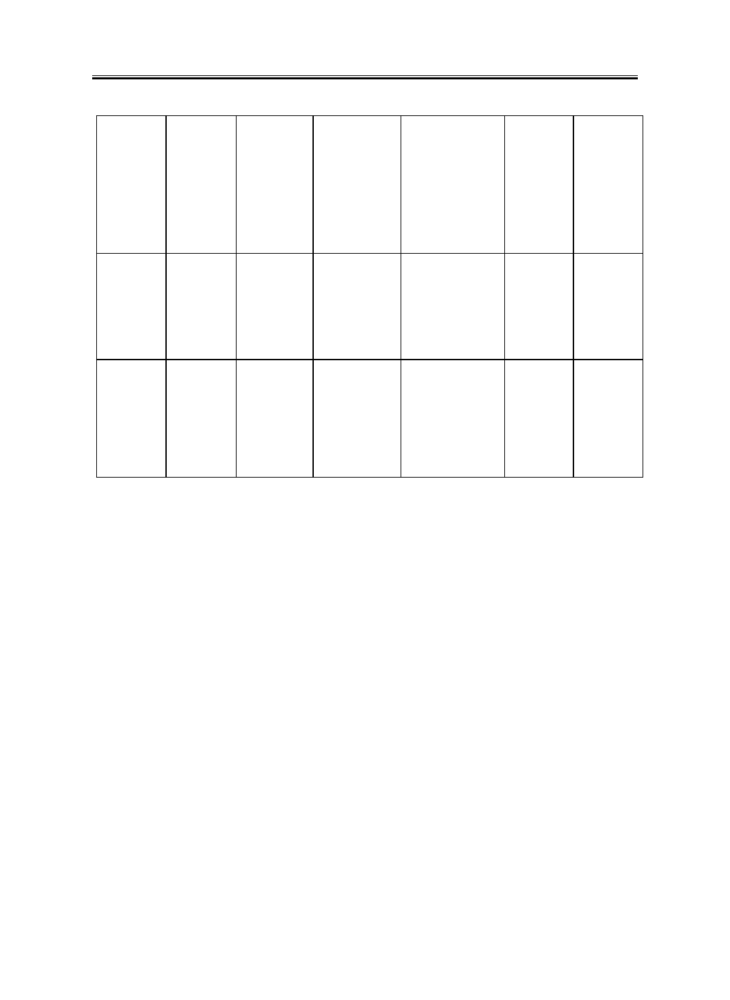
顧客導向的網路知識服務經營分析
伊莉討論
區
不同主題
的討論區
及「圖
片、音
樂、自由
的百科全
書」
無，由網
民貢獻知
識
鼓勵會員自
建討論區並
擔任版主
在百科專區編
輯詞條可累積
「金幣」，以
鼓勵網民編輯
詞條。
文、圖、
影片
未特別強
調
台灣論壇
職場討
論、休閒
娛樂、遊
戲分享
無，由網
民貢獻知
識
未特別強調
社群經營
會員可自由線
上問答，未特
別設計促進知
識交易的機制
文、圖、
多媒體檔
案、手機
軟體、小
遊戲軟體
未特別強
調
愛評網 消費者經
驗評述美
食、旅
遊、電影
娛樂等主
題
無，由網
民貢獻知
識
可透過幫會
功能發表討
論主題，並
成立若干愛
評同樂會
享用商家免費
提供的各種優
惠券等機制號
召網友分享知
識
以文為
主，以圖
為輔
「台灣大
愛評」為
手機美食
指南
參、研究方法及設計
本文為國科會計劃補助知識服務相關研究的部份成果，訪談圖書館經
營者問題大綱、潛在客戶問卷設計及完整問項、資料收集等相關細節請參考
「圖書館知識服務經營現況與潛在客戶需求調查研究」（註5）。本文合併
分析訪談兩位北市圖讀者的意見，以及深入分析不同職業背景的潛在客戶問
卷調查的意見。
在大規模收集潛在客戶意見之前，曾經透過北市圖聯絡曾經使用個人
化服務的讀者，希望能進行焦點團體座談會，但後來僅兩人應允出席，因此
更改為同時訪談兩人的方式，受訪讀者資訊（以下簡稱北市圖讀者）如表
2。訪談內容包含：何種情境下會到館使用圖書館的資源？使用過哪些圖書
館的服務？目前圖書館的服務是否能滿足您的資訊需求？「知識服務」的定
義與內容為何？圖書館可提供哪些類型的「知識服務」？圖書館提供「知識
服務」需酌情收費的想法為何？網路上有許多內容服務供應商或知識社群，
您是否有任何的使用經驗？由圖書館來提供知識服務的優勢與劣勢為何？
35
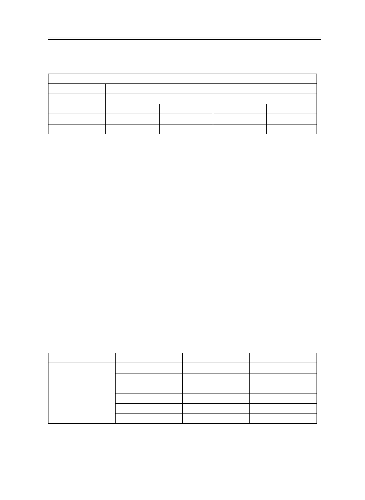
臺北市立圖書館館訊 29卷2期
表2 北市圖受訪讀者基本資料
訪談時間 2010年7月2日19:00-20:15
訪談地點 北市圖11F樂齡中心
讀者代碼 性別 年齡 職業 學歷
甲 女 25-30歲 電子資訊業 碩士
乙 男 43-48歲 農林漁牧業 碩士
肆、潛在客戶之整體意見分析
完整的潛在客戶整體意見分析，請參考「知識服務潛在客戶之意見調
查分析」段落，（註6）該文亦包括性別、年齡、學生與非學生族群的意見
差異比較，本文僅呈現該文未提及的內容，以及填答者提供的開放式意見。
一、填答者基本資訊
網路問卷於2010年9月及10月間在各大網路論壇散播，共有460位網民
填寫「圖書館知識服務潛在顧客調查問卷」，表3顯示填答者基本資訊，女
生填答人數多於男生；八成左右集中在21-40歲的年齡層，但以網路人口特
性來看，樣本對象的年齡層的分布與母體資料接近；合併已畢業及在學中的
學歷，大學及碩士學歷是最多的填答者；一半的填答者是學生，非學生族群
中的各種職業別填答人數不多，較多來自電子資訊業及服務業，其中待業者
亦有47人填答，顯示待業者是圖書館不容忽視的知識服務潛在客戶。
表3 填答者基本資訊
項目 次數 百分比
性別
男 192 41.7
女 268 58.3
年齡
20歲以下 68 14.9
21- 30歲 334 72.8
31- 40歲 46 9.6
41- 50歲 9 2
36
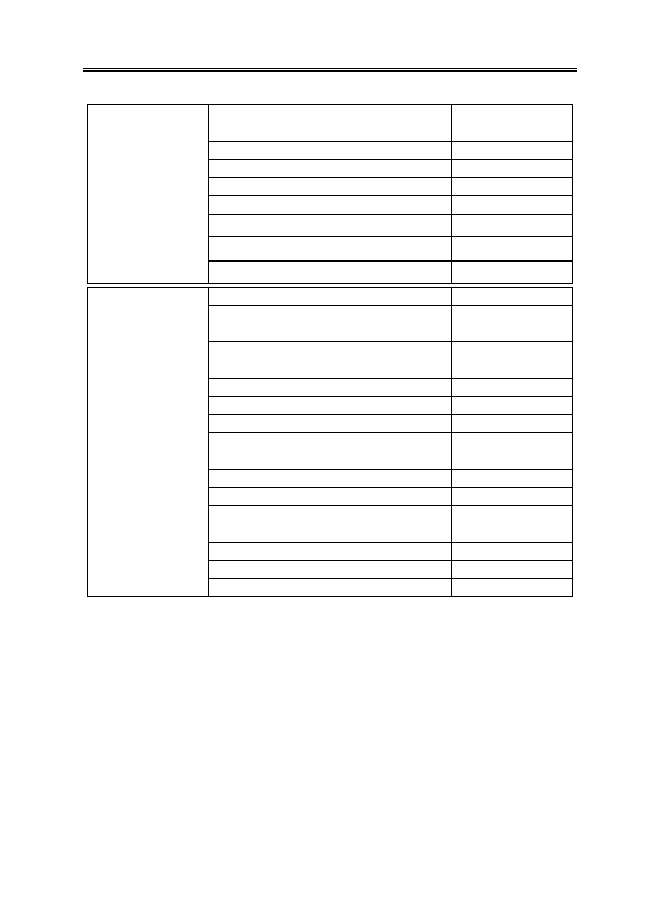
顧客導向的網路知識服務經營分析
項目 次數 百分比
學歷
（在學人數）
51-60歲 2 0.4
60歲以上 1 0.2
國中（2/2） 4 0.9
高中（16/6） 22 4.8
專科（14/3） 17 3.7
學士（194/111） 305 66.3
碩士（69/39） 108 23.5
博士（1/3） 4 0.9
職業
學生 236 51.3
工（礦、製造、水
電、營造）
13 2.8
商業及金融保險 22 4.8
公務人員 12 2.6
教師 13 2.8
服務業 37 8.0
電子資訊業 37 8.0
醫藥 14 3.0
出版業 2 0.4
傳播業 2 0.4
自由業 10 2.2
家管 9 2.0
待業 47 10.2
退休 2 0.4
軍人及服役中 2 0.4
未提供 2 0.4
二、不同類型圖書館使用情形
圖1呈現不同類型圖書館使用之前三高優先序，超過五成的網民選擇第
一優先為大學圖書館，其次是公共圖書館；第二優先比率最高為公共圖書
館，其次為國家圖書館與大學圖書館；第三優先比率最高是國家圖書館。由
於約有一半填答者為學生族群，因此呈現以大學圖書館為首選管道的結果，
扣除學生族群後（樣本數224人）重新製圖2，則公共圖書館為首選的比例較
高。另外，少數人繼續選擇第四及第五優先序分別為公司內部圖書室及醫學
圖書館，此資訊未顯示於圖中，公司內部圖書室在非學生族群中列為第二優
先的比例約佔10%，此比率仍低於公共、大學及國家圖書館，可能公司內部
圖書室在臺灣企業中設置比例不高，上班族仍需到外部尋求圖書相關資源。
37
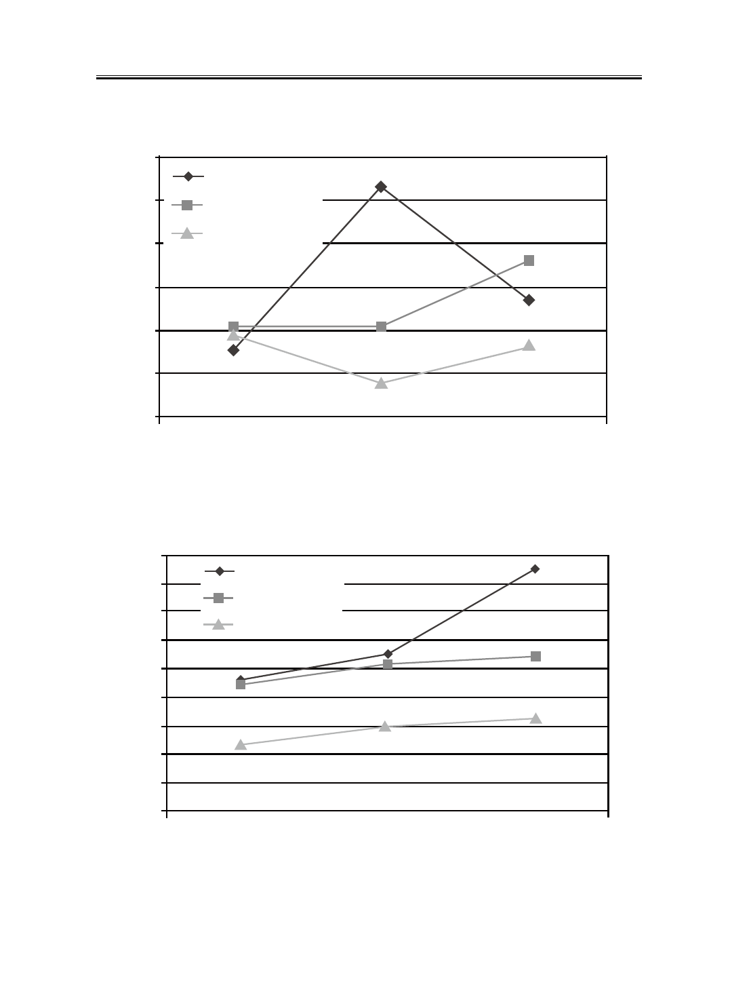
臺北市立圖書館館訊 29卷2期
0%
10%
20%
30%
40%
50%
60%
第二優先之比率
第一優先之比率
第三優先之比率
國家圖書館 大學圖書館 公共圖書館
45%
40%
35%
30%
25%
20%
15%
10%
0%
5%
第二優先之比率
第一優先之比率
第三優先之比率
國家圖書館 大學圖書館 公共圖書館
圖1 不同類型圖書館使用優先序 (N=460)
圖2 不同類型圖書館使用優先序 (非學生族群, N=224)
38
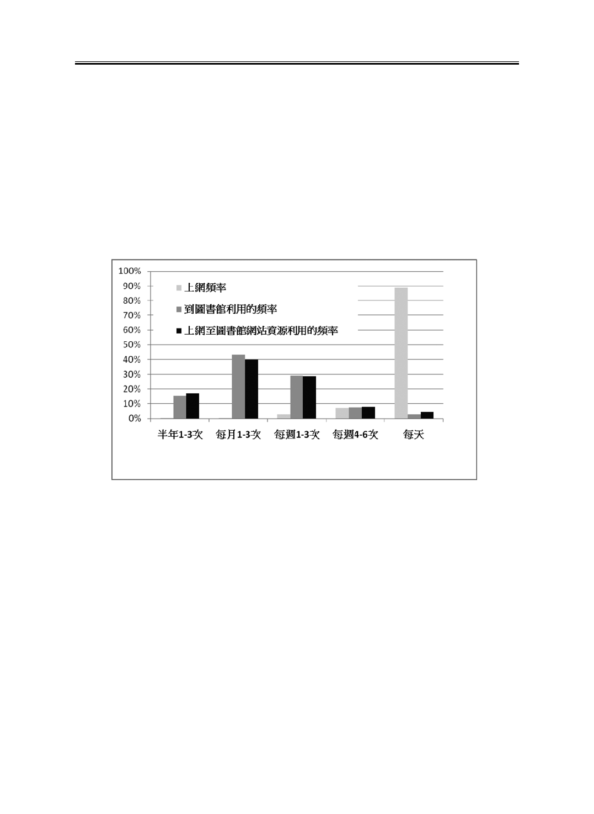
顧客導向的網路知識服務經營分析
三、一般網路資源、實體圖書館、圖書館網路服務利用頻率
在圖書館，圖書館網路服務與網路資源利用頻率調查顯示於圖3，近九
成的網民每天上網，而到館與利用圖書館網站資源頻率相近，約四成的網民
每月使用1-3次，其次約三成的網民每週使用1-3次。顯示八成以上的潛在客
戶至少每月會到館或上網使用圖書館資源一次以上，雖無法與上網的頻率相
比，但不同類型圖書館推廣服務仍有相當成效，一般民眾都大多有利用圖書
館的習慣，只是利用頻率上仍有進步空間。
四、到館及上網至圖書館網站的利用情形
到館及上網至圖書館網站的利用情形顯示如圖4，九成以上的網民是借
書或閱讀館內圖書才會到圖書館利用相關資源，僅7%之網民會到館詢問參
考館員，而大部份上網至圖書館網站者是檢索館藏目錄，其次分別是續借圖
書、查詢研討資料等。到館利用的情形之開放式意見中，尚包括使用圖書館
電腦、下載電子資料庫相關資料、參加講座、自修、使用討論室、增加書生
氣息等情況。上網利用圖書館網站的其他項目包括查詢圖書館開放時間、使
用電子資源、投訴反應等。北市圖的兩位讀者都是因研究所進修的因素，使
用北市圖的個人化服務，為撰寫論文而進一步申請付費服務以檢索相關研究
資源。
圖3 網路及圖書館利用頻率
39
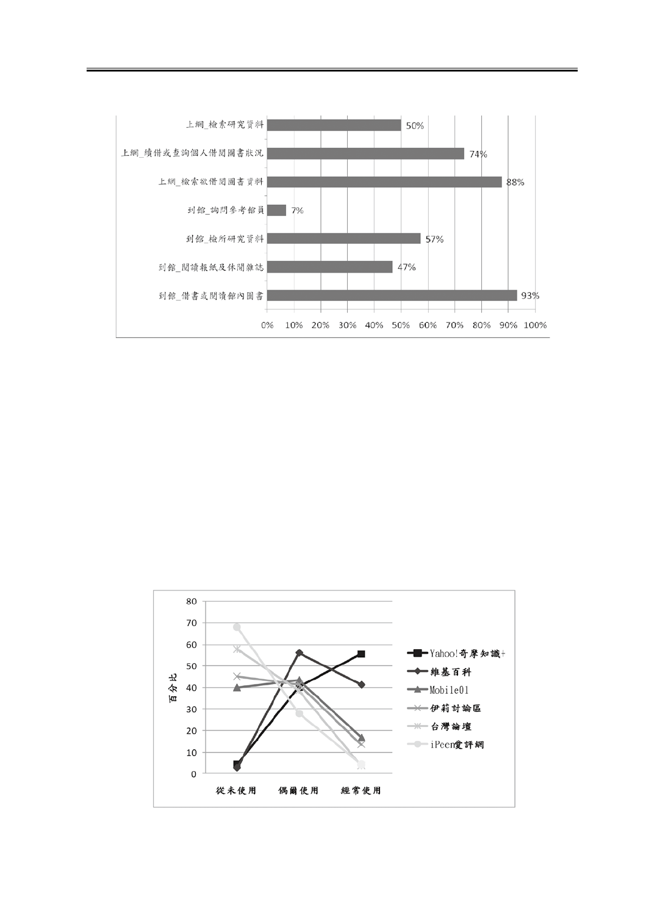
臺北市立圖書館館訊 29卷2期
五、知識型網站使用頻率
調查網民對於六個知識型網站的使用頻率，結果如圖5，Yahoo!奇摩知
識+經常使用比率佔五成以上，維基百科則是五成以上偶爾使用，四成是經
常使用，Mobile01則是四成偶爾使用，亦約有四成網民未曾使用。愛評網雖
具消費者分享經驗知識的特色，但仍有近七成潛在客戶從未使用，可見知名
度及社群經營仍是網民使用的主要誘因。卜小蝶與黃斐籃曾比較分析臺北市
立圖書館線上參考服務系統與Yahoo!奇摩知識+的異同，曾經建議圖書館員
應主動參與網路社群以提高圖書館能見度。（註7）
圖5 六個知識服務型台灣百大網站使用頻率
圖4 到館與上網利用圖書館資源情形
40

顧客導向的網路知識服務經營分析
六、知識服務內涵、考量因素及網站要素重視度
網民對於「知識服務概念」的認知，「知識服務是解決問題導向」的
題項上認同度最高，然對於「知識服務是有價（付費）的服務」的認同度較
低，顯示網民較無法接受付費型的知識服務。然而在北市圖訪談兩位讀者，
他們都認同個人化服務需要收費，讀者甲表示：「我們願意付費花錢買的是
那個節省時間的那個部份。（甲：318-319）」。除了問卷題項中提及有關
知識服務認知的內容之外，市圖讀者甲則認為應包含教育的功能：「只是覺
得說單純講到知識的話，就…，因為他就不再是單純資訊的概念，他應該有
點就是他要教會、教導你、教會你這樣子的一個新知識的這個動作。（甲：
185-187）」，而乙讀者則表示應針對特定讀者的需求來設計。 另外，訪談
北市圖兩位讀者表示圖書館來提供知識服務之優勢為：「嗯，如果說要圖書
館來提供知識服務的這一塊的話，我覺得他優勢是他的提供的資訊可能會比
較正確。（乙：497-498）」，但劣勢則為：「但是我有的時候會覺得圖書
館資訊更新的太慢，不是提供的太慢，是更新的太慢，有時候會這樣子。
（甲：517-518）」
本大項中提供開放型問項給網民填答，共計107人次在此問項中回應，
以下針對不同職業別網民的回應來分析。學生族群認為應針對一般民眾來設
計，有需求才提供之被動式服務，傳授個人經驗傳承，應由專業人士來回
答，其中一名學生在此問項中下了一則完整的註解：「大多人只有在遇到問
題、困難時才會選擇向知識服務求救，進而排解問題，我認為知識服務是完
整性、多元性、正確性可檢索、可依時局、環境之不同而有所改變」。商業
及金融保險業者認為需專業且個人化，服務業者則提及將隱性知識具體化，
加以組織並可重複利用。工（礦、製造、水電、營造）業者認為知識服務的
資訊來源需有據；電子資訊業者則提及即時、分享、正確、便利等議題；醫
藥業者認為雙向溝通、集思廣益等，其他如出版業、傳播業、服兵役者及軍
人自由業、家管等族群亦分別提供了1至5則的意見。待業者中一人提及：
「知識服務應該是任何人都可以利用的，但雖然知識服務往往是解決問題導
向的，可惜在網路上因常有類似問題提出而導致解答公式化，我覺得如此導
致獲得的知識非常不個人化，尤其以[奇摩知識]可為例子」，顯示仍有網民
41

臺北市立圖書館館訊 29卷2期
不認同許多人在Yahoo!奇摩知識+中找尋便利的解答。
對於知識服務包含的內涵，綜整如下：「圖書館經營者的對於知識服
務的定義是個人化的、解決問題導向的服務，相異於資訊服務之處為內容需
經館員判斷與加值的資訊，而且強調即時性。潛在客戶對於知識服務的認知
上，認同度較高之定義為解決問題導向、將現有資訊整理成可提供決策的資
訊，對於知識服務是有價的觀點則認同度較低。」綜整圖書館經營者所提出
之各項要素，提供潛在客戶填答，將460位填答者給予各項要素的平均值以
雷達圖呈現結果（圖6），內容之正確性與及時性，以及內容具公信力及權
威性是潛在客戶最重視的考量因素。另外，在知識服務網站平臺之六項要素
之重視程度平均數繪製雷達圖（圖7），可清楚呈現知識庫仍是首重要素，
其次才是介面使用的便利性，行動化則是潛在客戶較不重視的要素。因此，
現階段圖書館提供知識服務應首重知識庫的內容及正確性，並建立專業的好
口碑。（註8）
伍、不同職業別潛在客戶意見分析
本研究之填答者約有一半來自非學生族群，但不同職業別分布不均
勻，「待業」族群可能在找工作中，常在網路上尋求機會，因此本研究散佈
於各網路論壇中的問卷，待業者佔非學生族群比例不少，表示待業者對於
圖書館提供知識服務內容是有所期待的，茲將表3之非學生族群中不同類型
職業大於20人以上填答之電子資訊業、服務業、商業及金融保險業、待業等
四種類型的族群，以及合併公務人員與教師為「公教人員」，將各項知識服
務要素的重視度進行變異數分析，表3中的內容之正確性等四項為統計上具
顯著性差異的項目，再以Scheffe法進行職業別的事後檢定，整合有差異的
項目與職業別於表3，電子資訊業者普遍較其他行業人員對於各項要素的重
視度較低，尤其與待業者在內容正確、價格合理、態度親切等三項目上達顯
著差異，而服務業者在態度親切及平臺便利等二個項目的重視度顯著高於於
電子資訊業者，電子資訊業者較務實，對於無關知識內容本身的品質較不重
視，而服務業者將心比心，對於服務態度相當重視。
42
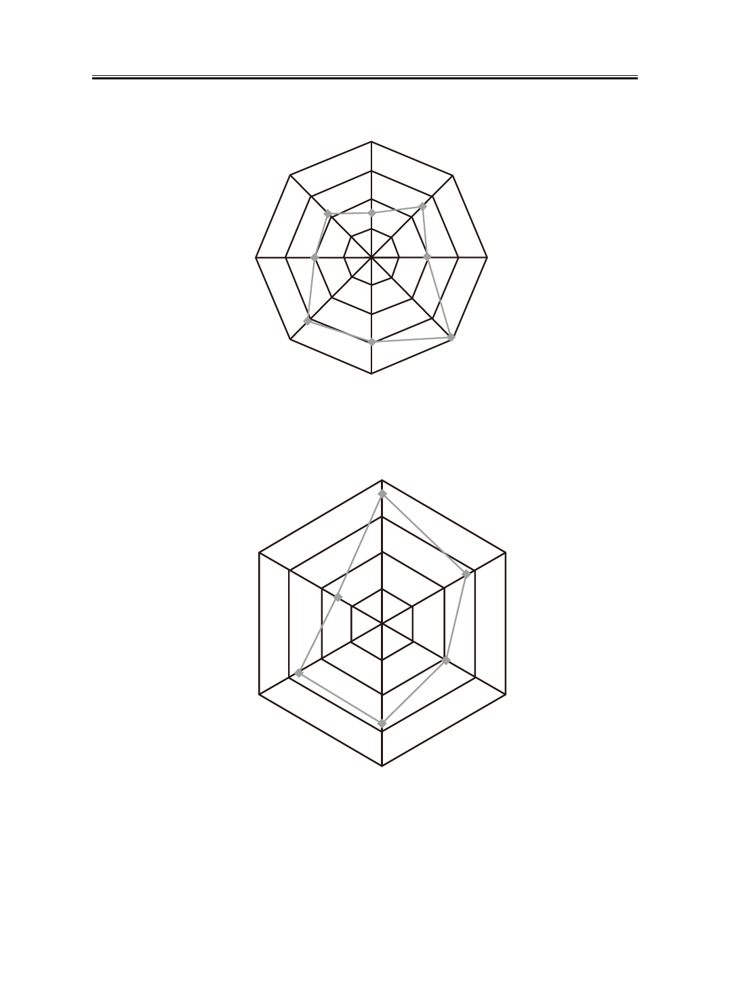
顧客導向的網路知識服務經營分析
4.60
4.40
4.20
4.30
4.11
4.20
4.43
4.39
4.59
4.19
4.23
4.00
3.00
價格合理性
提供知識服務機構的專業
形象與風評
內容之正確性
內容具公信力/權威性
能快速而及時地提供資訊
能與服務人員互動溝通以
切合需求
接案服務人員態度親切
提供個人化的服務
圖6 利用知識服務的考量因素雷達圖
4.09
3.82
4.11
4.08
3.58
4.45
3.00
3.40
3.80
4.20
4.60
知識專家
社群經營
知識交易平台
數位內容
行動化
知識庫
圖7 知識服務網站平台之要素重視度雷達圖
43
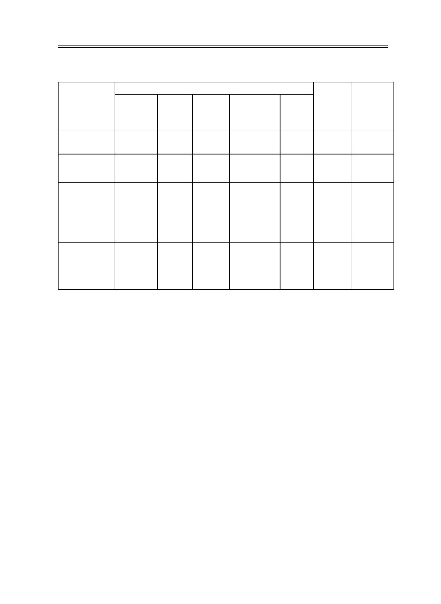
臺北市立圖書館館訊 29卷2期
表3：不同職業別知識服務考量因素及網站要素重視度變異數分析摘要表
項目
平均數
F值 事後比較
電子資
訊業
(N=37)
服務業
(N=37)
公教
人員
(N=25)
商業及金
融保險
(N=22)
待業
(N=47)
內容之正確
性
4.32 4.57 4.60 4.64 4.70 2.223*
電子資訊
業<待業
價格合理性 4.08 4.19 4.44 4.37 4.62 4.257**
電子資訊
業<待業
接案服務人
員態度親切
3.84 4.33 4.32 4.23 4.47 5.143**
電子資訊
業<待業
電子資訊
業<服務
業
提供媒合知
識交易之平
台介面及功
能之便利性
3.81 4.27 4.08 4.23 4.15 2.408*
電子資訊
業<服務
業
*p<0.1 **p<0.05
綜整圖書館經營者訪談知識服務可提供的類型列舉項目如表4，其中並
分別比較不同職業別對於主題式知識服務與教育訓練等諮詢服務有興趣的項
目的勾選次數及比例，四成以上的公務人員對閱讀活動的教案或課程設計有
興趣，五成的商業及金融保險業者對心靈成長、第二專長資訊以轉換職場
、
當代趨勢等主題有興趣，五成的服務業者對閱讀活動的教案或課程設計、
第二專長資訊以轉換職場等主題有興趣，四成以上的電子資訊業者有勾選各
種產業資訊之專業知識及技能，五成五的待業者有勾選第二專長資訊以轉換
職場，也有四成五的待業者對於各種產業資訊之專業知識及技能有興趣，前
述結果與整體分析為閱讀活動教案與設計是多數人會勾選的項目有些差異。
（註9）因此，不同職業別的潛在客戶，對於知識服務項目上的選擇亦各有
其偏好，表4呈現五種類型的族群對於各主題的興趣，可提供圖書館推廣個
人化服務時之參考資訊。
44
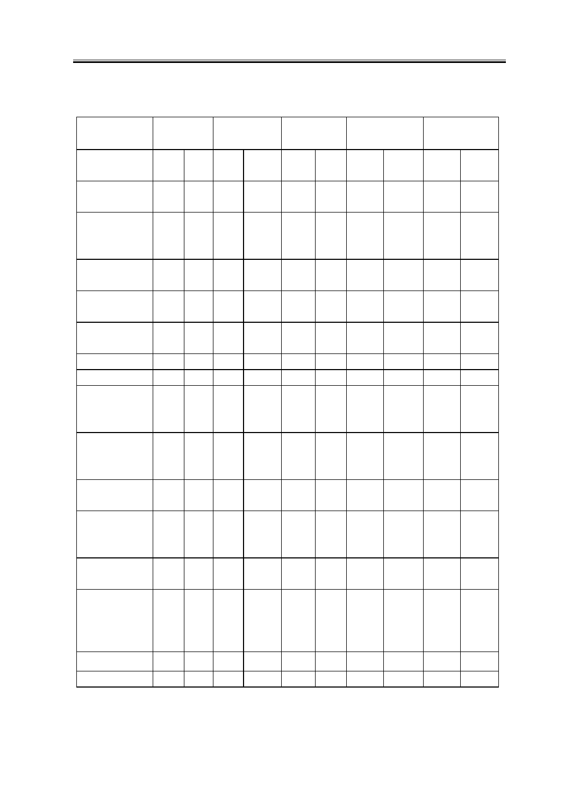
顧客導向的網路知識服務經營分析
表4：不同職業別對於主題式知識服務與教育訓練等諮詢服務有興趣的項目及比率
職業別 公教人員
商業及金融
保險
服務業 電子資訊業 待業
項目 次數
百分
比
次數
百分
比
次數
百分
比
次數
百分
比
次數
百分
比
講 師 的 人 才
資料庫
6 24% 8 36% 14 38% 4 11% 13 28%
閱 讀 活 動 的
教 案 或 課 程
設計
11 44% 5 23% 20 54% 14 38% 19 40%
繪 本 教 學 設
計或教案
6 24% 6 27% 15 41% 8 22% 12 26%
志 工 訓 練 與
管理
4 16% 7 32% 10 27% 7 19% 12 26%
健 康 諮 詢 資
訊
7 28% 10 45% 13 35% 10 27% 15 32%
心靈成長 7 28% 11 50% 10 27% 6 16% 19 40%
親子教育 3 12% 5 23% 6 16% 5 14% 3 6%
第 二 專 長 資
訊 以 轉 換 職
場
5 20% 11 50% 19 51% 11 30% 26 55%
各 種 產 業 資
訊 之 專 業 知
識及技能
7 28% 9 41% 18 49% 16 43% 21 45%
創 業 資 訊 分
析
3 12% 8 36% 8 22% 9 24% 18 38%
專 利 資 訊 分
析 與 申 請 諮
詢服務
2 8% 5 23% 3 8% 6 16% 7 15%
個 人 化 之 研
究資訊服務
7 28
% 8 36% 12 32% 8 22% 17 36%
依 個 人 研 究
主 題 規 劃 資
料 查 找 教 育
訓練課程
7 28% 6 27% 15 41% 7 19% 16 34%
氣候變遷 4 16% 7 32% 4 11% 4 11% 7 15%
當代趨勢 7 28% 12 55% 13 35% 8 22% 19 40%
註：百分比為次數與該職業別總人數的比值
45
臺北市立圖書館館訊 29卷2期
陸、結論與建議
圖書館希望藉由差異化服務以提昇其價值，提供客戶知識需求之問題解
決導向式服務是策略目標之一，本文檢視不同類型的知識型服務網站，希望
圖書館能由其中挑選可參考仿效之項目以改善網路服務的質與量，期許成為
多數人的知識入口。潛在客戶的圖書館利用行為中，公共圖書館為非學生族
群的首選，公共圖書館有責任為不同職業背景人員營造知識殿堂。知識庫內
容正確性及時效性是潛在客戶共同看重的要素，然而，不同職業背景者對於
有興趣的主題是不同的，本文提出較高比例的服務業、商業金融業、及待業
者對於第二專長資訊以轉換職場的主題感興趣，顯示一般民眾對於提昇個人
的多元化就業能力仍有所期待，且希望圖書館可彙整相關優質資源以利個人
進修成長。建議圖書館可分階段設定目標族群，並收集該族群有興趣的主題
資源後，向該族群推廣與行銷，可設計若干回饋機制，以瞭解該族群對於主
題資源的滿意程度，並規劃可提昇目標族群對圖書館網路服務忠誠度的運作
機制，如使用個人化服務可累積點數而擴增借書冊數與展延期限等等，藉由
擴展實體圖書館資源的使用權來提昇潛在客戶利用圖書館網路知識服務的意
願。
〈本文為國科會計補助知識服務相關研究的部份成果，研究經費承蒙國
科會專題研究計畫補助，編號：NSC98-2410-H-030-052，謹此敬謝〉
註釋
註1：黃元鶴，「圖書館知識服務經營現況與潛在客戶需求調查研究」，圖
書資訊學研究 5卷2期（民國100年6月）：頁143-194。
註2：曾淑賢、郭玲慈、吳嘉雯、林淑君，「臺北市立圖書館個人化資訊服
務使用者需求與績效評估」（臺北市：臺北市立圖書館，民國98
年），臺北市政府97年度計畫研究報告。
46
顧客導向的網路知識服務經營分析
註3：數位時代，「2010台灣網站100強」，數位時代 190期（民國99年）：
頁84-89。
註4：陳文芳，「網路化知識服務平台經營探討」（大同大學資訊經營學研
究所，碩士論文，民國98年）。
註5：同註1。
註6：同上註。
註7：卜小蝶、黃斐籃，「網路問答服務系統探析：以臺北市立圖書館線上
參考服務系統與Yahoo!奇摩知識+為例」，圖書與資訊學刊 62期（民
國96年）：頁35-51。
註8：同註1。
註9：同上註。
47

「塔塔魔幻閱森林活動」－ 公共圖書館融入校園閱讀活動之推廣
「塔塔魔幻閱森林活動」－
公共圖書館融入校園閱讀活動之推廣
”Tar Tar Magic Forest for fun reading”-
the Promotion of Public Libraries Immersed in
Reading on Campus
林怡青
I-Ching Lin
臺北市立圖書館閱覽典藏課館員
Senior Clerk, Circulation & Preservation Section,
Taipei Public Library
【摘要】
公共圖書館負有社會教育之責任，如何將圖書館的推廣活動融入學校課
程，並誘發孩童深入閱讀與利用圖書館的興趣，為公共圖書館不可推諉之社
會責任。而哪些活動設計較為妥切合適呢？則是本文所要探討的主題。
【Abstract】
Being responsible for social education, public libraries have the inevitable
obligation to integrate the reading promotion projects into curriculums for the
purpose of arousing children's interest in comprehensive reading and using library.
And how to design appropriate activities is what this article aims to discuss.
關鍵字：公共圖書館、推廣活動、兒童多元閱讀、兒童服務、圖書館利用教育
51

臺北市立圖書館館訊 29卷2期
Keywords: Public Libraries, Promoting Activities, Child Multi-dimensional
Reading, Childrens Service, Library Using Education
壹、前言
基於公共圖書館的社會教育之責及提供兒童多元閱讀的目標，民國96年
臺北市立圖書館閱覽典藏課發起了這項以「融入國小中低年級課程」－「塔
塔魔幻閱森林系列活動」的閱讀計畫。依據蒐羅之文獻及網路資源顯示，國
外先進國家對於學齡兒童的圖書資訊技能之培育，乃從融入學校教學延展至
公共圖書館的利用，公共圖書館於學童課後提供「Homework Help」之相關
圖書資訊，以為解決其課業問題之資源，並養成閱讀與獨立學習的習慣。
綜觀國內學童進入公共圖書館兒童室之情況，兒童圖書館員經常面臨對
於使用圖書館資源常常不知所措的小讀者，以及為
孩子查找閱讀資源而焦慮
的家長；且目前國內公共圖書館兒童服務，並未如歐美各國所規劃具體的課
後作業服務；從教育學家杜威的看法，「教育即是生活，與環境互為影響，
為解決週遭環境問題而存在，學校重視兒童的創造力、需求和興趣。」(註
1)，也可進一步說明學校與社會公共教育對孩童學習的重要性。
基於上述原因，同時期望藉此活動發揮北市圖兒童圖書館員專業知能，
提升兒童讀者服務及兒童圖書館員形象，提供學童課後作業之閱讀資源，協
助家長選擇融入學童課程主題閱讀資源，促使閱讀課後讀物變成孩子的習慣
而不是一項負擔，以培養孩子具備「帶著走的閱讀素養能力」。
貳、「塔塔魔幻閱森林活動」設計理念
圖書館進行各項閱讀活動規劃時，除傳遞深耕閱讀理念外，亦希望可以
將閱讀融入學童的日常生活，並切入國小課程主題，以延伸國小學童課外閱
讀資源為活動內容。本文中所規劃的主軸活動旨在與國小課程結合，故設計
的第一步驟，也是最重要的階段，即需歸納整理臺
北市國小各年級各科主要
教學單元主題，並廣泛蒐集與國小課程或作業相關之各種閱讀資源及優質網
路閱讀資訊，充實推介資源等。整體活動實施以北市圖總館兒童室之館藏資
源為主，依上述整理之教學單元主題配合學校教學進度，推出「Homework
52

「塔塔魔幻閱森林活動」－ 公共圖書館融入校園閱讀活動之推廣
Reading專題閱讀展」，提供適齡主題圖書資源單，支援學校教學之課外閱
讀資源。
活動辦理時為引發學童的興趣及注意，北市圖為整體活動創造虛擬軸心
人物－「塔塔樹精靈」，並設計童話故事、佈置實景營造故事氛圍，提高學
童的認同感及關注力。四款不同顏色的「塔塔」分別擔任森林之寶—圖書的
守護者，並推薦學童融入課程單元。綠塔塔守護「自然寶藏」、藍塔塔開啟
「成長天堂」、黃塔塔帶領「社區尋寶」ヽ紅塔塔培育「閱讀花園」，藉由
活潑的樹精靈引出四大主題的圖書資源。
軸心人物引出各領域主題，現場並搭配「Homework Reading」書屋，展
示及推薦閱讀主題書單，並搭配「小書迷俱樂部」、「校園隨行服務」等活
動方案，將閱讀及圖書館利用教育貫穿於國小中低年級學童課程中，提供不
偏食的全方位閱讀服務，統整各類主題資源，完整融入學校單元課程。
參、「塔塔魔幻閱森林活動」融入校園課程設計
一、校園隨行服務
（一）實施計畫
以北市圖總館為起點，支援圖書館鄰近國民小學1-3年級各班教師，
由兒童圖書館館員到學校進行圖書資訊利用教育之教學，以及與課程
相關之圖書資源介紹。
（二）實施學校
與教育大學附設實驗國民小學合作到校進行「圖書館利用教育」之服
務，緊接著與鄰近之龍安國民小學、新生國民小學一年級師生配合到
校進行公共圖書館利用素養之培育，此後並陸續與其他國民小學合作
推廣此活動。
（三）實施內容
1.塔塔森林的傳說
藉由主題人物的故事（塔塔樹精靈）簡報檔解說，讓學童們透過故
事和圖書館產生連結與好奇心。
2.主題閱讀與圖書館館藏
53

臺北市立圖書館館訊 29卷2期
每學期結合學校課程單元主題，將圖書館館藏介紹融入學校課程單元
主題中（例如：配合「春天」的課程主題，介紹有關春天的兒童圖
書），讓學童在有趣好玩的引介中，認識圖書館這座大寶庫，豐富學
童的閱讀視野，達到「閱讀不偏食」的目的。
3.認識公共圖書館
將閱讀或圖書館主題相關的圖書，利用有趣的簡報讓小朋友輕鬆進入
圖書館的領域、認識圖書館的功能和服務，並激發小朋友利用圖書館
的興趣，培養孩童正確使用公共圖書館的習慣。
二、「塔塔書屋」童書票選
（一）實施計畫
1.將閱讀融入國小學童校園學習及日常生活中，培養終身閱讀習慣。
2.鼓勵國小學童發展自主性選書，激發自我閱讀興趣。
3.透過學童票選童書，引起學生自主閱讀動機，塑造校園話題圖書。
4.延伸「塔塔校園隨行服務」宗旨，推廣閱讀及圖書資訊利用教育。
5.將「塔塔書屋」之圖書移至校園展覽並作為票選之依據。
（二）配合學校
臺北市立教育大學附設實驗小學圖書館
（三）低年級實施內容
1.鼓勵低年級小朋友擔任「閱讀推手」之任務，從塔塔書屋中挑選最
愛的圖書並撰寫100字左右的書籍內容介紹，製作成簡報，並自行錄
音存檔後由圖書館老師篩選優秀作品放至學校網頁供學童瀏覽閱讀。
2.由班級老師選擇帶領學生進行「網頁集體閱讀」或是「全班參訪圖
書館的塔塔書屋」，加深學童對票選圖書的認識。
3.票選期限內請班級老師帶領學生至圖書館進行投票。
4.投票結果公佈後選出低年級學童的最愛TOP5。
（四）中年級實施內容
1.與「低年級」學童做法相同，鼓勵學童擔任「閱讀推手」之任務並
錄製簡報檔。
54

「塔塔魔幻閱森林活動」－ 公共圖書館融入校園閱讀活動之推廣
2.以班級為單位，經討論書籍內容後，選出全班欲共同宣傳的五本書，
由同學組成「好書宣傳團」，再至其它中年級班級進行好書巡迴宣傳
拉票的任務。
3.票選期限內請在聽完「好書宣傳團」或瀏覽過「閱讀網頁」之班級
老師。
4.帶領學生至圖書館進行投票。
5.投票結果公佈後選出中年級學童的最愛TOP5。
肆、「塔塔魔幻閱森林活動」融入圖書館利用教育
活動設計
一、塔塔的小書迷俱樂部
（一）實施計畫
1.採小團體親子共同參與的方式，透過「好聽的故事」介紹圖書館各
項服務及資源；以「遊戲方式」取代說明式導覽，促使小朋友在輕鬆
的活動中親近圖書館，學習有效運用圖書館資源，並加入「主題學
習」的單元—擴大孩子的閱讀視野、支援學校所學之內容，落實圖書
館利用及資訊素養教育。
2.分中低年級進行不同程度的圖書館利用課程，並在中年級學童的課
程中加入「成果發表」的練習，讓孩子將活動中所學到的「圖書館利
用知識與技能」運用在實作操練的「專題成果發表」。
（二）實施內容
1.圖書館新鮮人（低年級）：透過說故事、團體遊戲、手藝創作等活
動，鼓勵親子共同參與、享受閱讀的樂趣，並且藉由整體活動深入瞭
解圖書館、親近圖書館、利用圖書館。
2.圖書館小達人（中年級）：透過閱讀遊戲、故事導讀、討論分享、
成果發表等活動，輕鬆帶領小朋友和家長進入閱讀花園中享受閱讀的
樂趣，並藉由整體活動設計讓親子由繪本式閱讀進入文字書的討論與
閱讀分享。
55
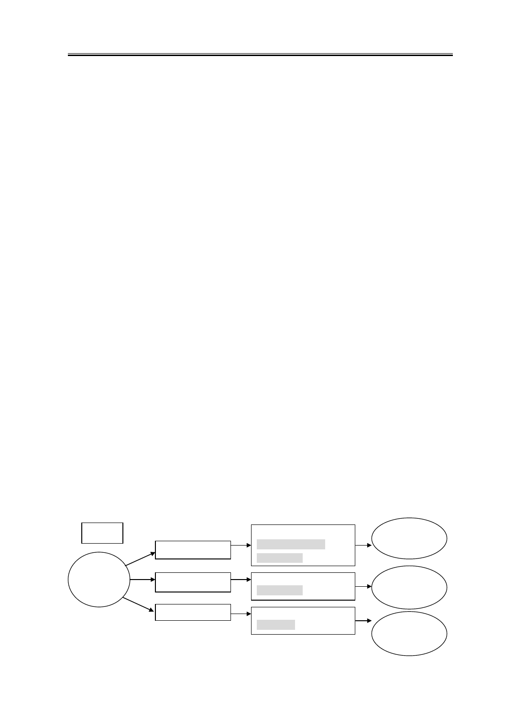
臺北市立圖書館館訊 29卷2期
伍、「塔塔魔幻閱森林活動」實例分享
一、活動名稱：小精靈塔塔之＂好書齊共讀
”
二、活動期程：民國100年3月5日-6月30日
三、活動構思與緣由
（一）搭配「好書大家讀20週年」活動為主軸，讓孩子在推薦好書的薰染之
下領會閱讀的真善美。
（二）運用四色小精靈塔塔的主題特色，各自結合好書大家讀的分類主題
「故事文學組」、「非故事文學組」、「圖畫書及幼兒讀物組」、
「知識性讀物區」，以一個精靈搭配一個主題的方式，加深孩子對
好書大家讀活動的認識。
（三）活動推廣地點分別在「閱覽典藏課兒童室」及「校園巡迴服務－大安
國小」兩個地點，除了讓到館親子認識這個活動，也讓校園的師生
多一個機會認識公共圖書館。
四、活動計畫與進行方式
（一）活動計畫
1.搭配主題：結合館方的長態性活動「林老師說故事」，在故事活
動中延伸「藝術」、「自然」、「經典文學」的閱讀主題，帶領孩
子從各種角度認識「好書大家讀」的優良讀物，活動架構參見例圖
（1）。
例圖(1)
聽!好書
在說話
看！藝術小畫廊
搭配好書大家讀的組別是--
圖畫書及幼兒讀物組
非故事文學組
延伸活動：拼貼
與油彩創作
走！親近自然小講堂
玩！經典閱讀小講堂
搭配好書大家讀的組別是--
知識性讀物組
延伸活動：昆蟲
與植物觀察講
堂
搭配好書大家讀的組別是--
故事文學組
延伸活動：兒童
經典小說深入
導讀
56
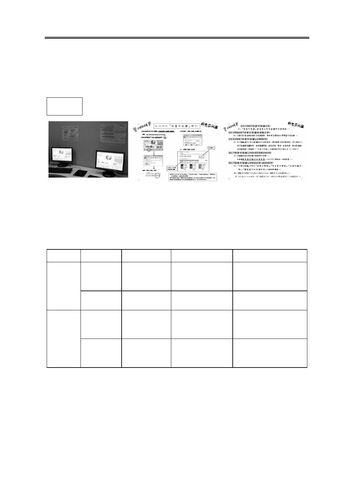
「塔塔魔幻閱森林活動」－ 公共圖書館融入校園閱讀活動之推廣
2.氛圍營造：將「好書大家讀」的來源歷史、查找方法製成圖示海
報，張貼於兒童室的電腦查詢區以及小博士信箱活動區，加強讀者
的印象，實例照片參見例圖（2）。
（二）進行方式
1.看！藝術小畫廊：本活動活動期程為2個月，計辦理4次活動，每個
月以相同的活動內容呈現。動中除了專業林老師志工團隊的說故事
之外，還邀請美術老師將閱讀與實作結合，以下為活動設計內容。
活動時間 搭配活動名稱 主題圖書/活動 好書大家讀組別
第1、2次
14:30-15:30
林老師說故事
時間
藝想城市尋寶趣
(維京國際出版)
圖畫書及幼兒讀物組
15:30-16:30 藝術小畫廊 101大樓拼貼畫 圖畫書及幼兒讀物組
第3、4次
14:30-15:30
林老師說故事
時間
夏綠蒂遊莫內花園
(典藏藝術家庭出版)
非故事文學組
15:30-16:30 藝術小畫廊
油土與光影的創作
非故事文學組
2.走！親近自然小講堂：在自然講堂中設計了1個月2次的主題活動，
活動中邀請自然生態專業講師，將書中的大自然搬到圖書館中，讓
孩子用閱讀體驗豐富的自然生態讀物。
例圖(2)
57
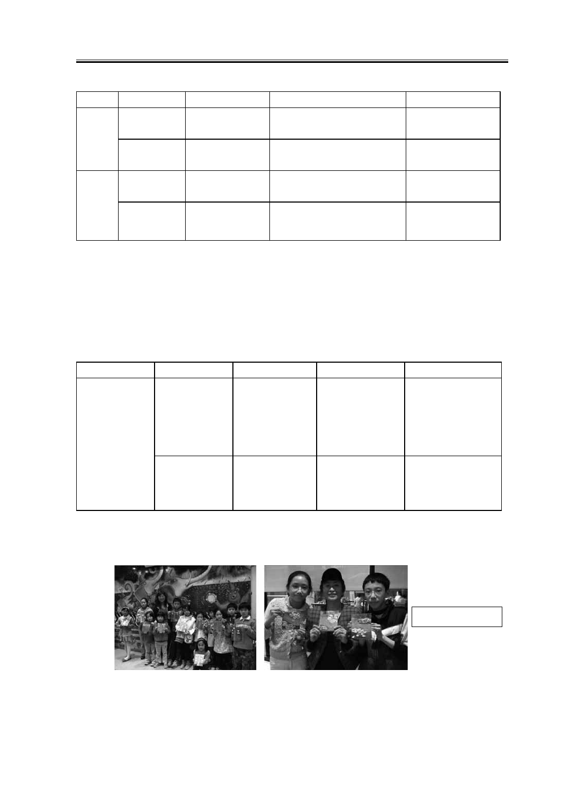
臺北市立圖書館館訊 29卷2期
活動時間 搭配活動名稱 主題圖書/活動 好書大家讀組別
第1次
14:30-15:30
林老師說故事
時間
螢火蟲去許願
(維京國際)
知識性讀物組
15:30-16:30
走！親近自然
小講堂
你所不瞭解的螢火蟲及
昆蟲的生態
知識性讀物組
第2次
14:30-15:30
林老師說故事
時間
吃蟲的植物(親親文化) 知識性讀物組
15:30-16:30
走！親近自然
小講堂
哇!植物的大嘴巴 知識性讀物組
3.玩！經典閱讀小講堂：經典閱讀環扣著「好書大家讀」中「故事文
學組」的文學讀物，1個月設計2堂課程內容，我們從中挑選出小朋
友耳熟能詳的「小熊維尼」經典小說讀物，介紹創造小熊維尼的大
師並共讀維尼和森林朋友的經典對話。
活動時間 搭配活動名稱 主題圖書/活動 好書大家讀組別
活動內容2次
均相同
14:30-15:30
林老師說故事
時間
1.小熊維尼圖
畫書
(出版社不限)
2.小熊維尼
(聯經出版社)
故事文學組
15:30-16:30
走！親近自然
小講堂
跟著大師的腳
步走—真實的
小熊維尼?
故事文學組
4.活動剪影，藝術－自然－經典閱讀。
藝術閱讀活動
58
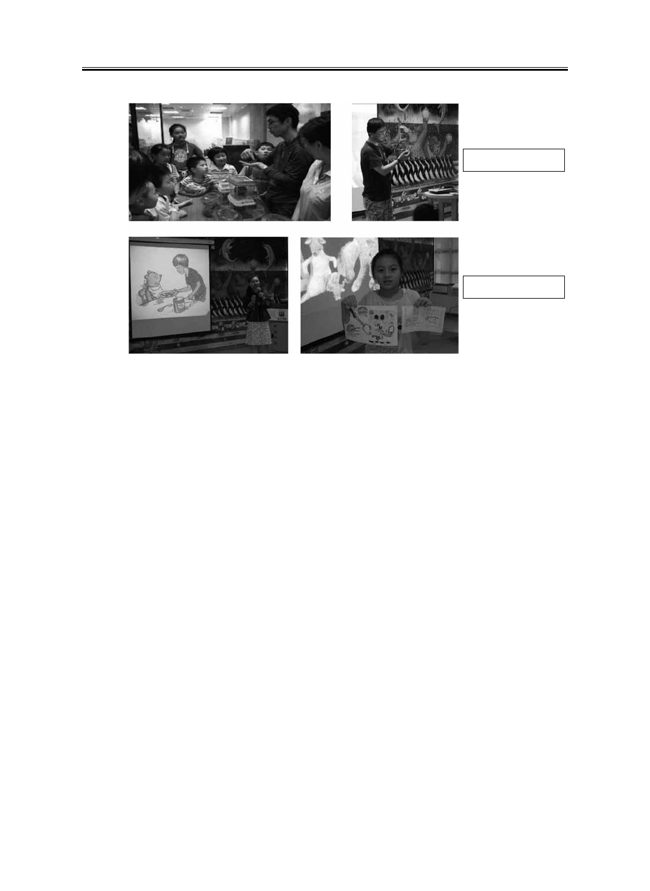
「塔塔魔幻閱森林活動」－ 公共圖書館融入校園閱讀活動之推廣
自然閱讀活動
經典閱讀活動
五、校園巡迴服務
（一）活動計畫
1.圖書館利用養成：利用學校閱讀課程，將兒童室的塔塔精靈帶至社
區校園，藉由虛擬人物來傳達圖書館的使用方法，引導利用實體圖
書館的興趣。
2.好書大家讀推薦：將「好書大家讀」的活動帶至校園中介紹給老師
及學生。
（二）活動對象：大安國小一年級
（三）活動進行時間：40分鐘
（四）實施方式
1.童話故事開場：播放魔幻森林精靈塔塔的故事。
2.圖書館利用：把圖書館相關圖書串連成兒童版的使用規定，活動中
所套用的規定為臺北市立圖書館的使用規定。
59
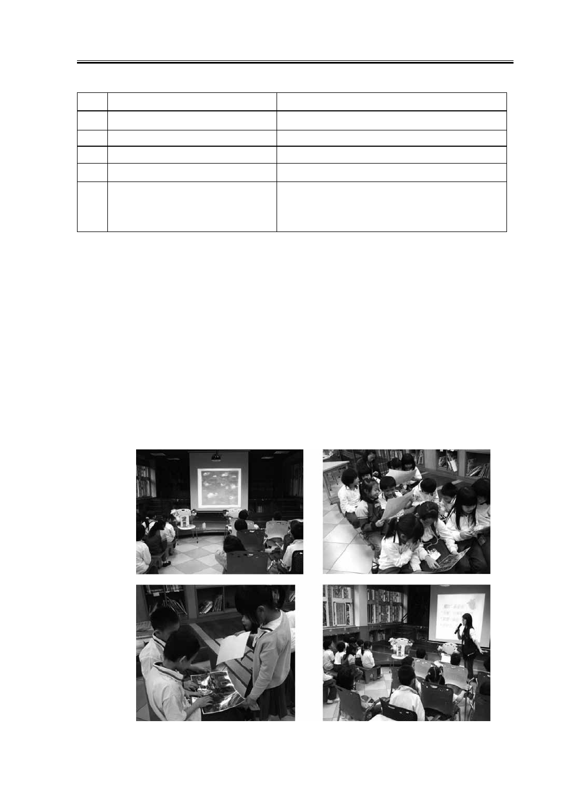
臺北市立圖書館館訊 29卷2期
主題概念 圖書
1 為什麼要使用圖書館？ 無尾熊和小花（小魯出版社）
2 圖書館裡有什麼寶藏？ 大鬼小鬼圖書館（小魯出版社）
3 如何辦證？ 莉莉的第一張借書證（上誼出版社）
4 借的書不見了，怎麼辦？ 有誰看到我的書？（遠流出版社）
5 圖書館的規矩
圖書館獅子（和英出版社）
誰怕大壞書?（格林出版社）
喂!等一下那是我的書（上誼出版社）
3.好書大家讀
（1）簡介活動的網路入徑，再挑選好書大家的圖書做介紹和互動遊
戲。
（2）挑選圖書：藝想城市尋寶趣 （維京國際出版）、環遊世界尋寶
趣（維京國際出版）
（3）互動遊戲：藉由圖書中「找物尋寶」的特性，掃瞄印成多張A3
圖卡，請小朋友分組找出圖片中的物品是由什麼物件組成的。
（五）活動剪影
60

「塔塔魔幻閱森林活動」－ 公共圖書館融入校園閱讀活動之推廣
陸、檢討與省思
近年來公共圖書館經常利用不同型式的推廣活動，行銷圖書館利用教
育，受到家長和學童的好評及熱烈參與，如：每年舉辦的寒暑期閱讀活動，
然而參加者以年齡層較低的親子讀者群居多，塔塔的系列活動中除了維持低
年級的課程外，並加入中年級的課程，期待圖書館利用教育的活動能夠將學
齡層面往上延伸，為孩童的閱讀視野及知識領域打下良好的基礎，讓進圖書
館不再僅只於「寫作業」，而能引導孩童將圖書館的資源及各種利用技巧，
自由運用於學習旅程中。
活動推廣進行中我們也發現一些現象和困難點，以下條列分析說明
之。
一、設定主題角色容易吸引孩童注目
有了塔塔森林的角色偶，不論是進入校園或在圖書館內舉辦各類型活
動均能主動吸引孩童的目光，也讓孩童容易產生投入的的情感，進而改變孩
童對圖書館生硬的刻板印象。
二、利用繪本串連圖書館主題與圖書館使用規則
口頭說教或是導覽解說，雖然可以讓孩子對某種事物有了基礎的認
識，但，如果藉由故事的串連強化孩子對條例的認知，確實可以加深孩童對
圖書館守則的印象，進而加強實踐的意願。
三、親師共同參與強化理念的傳承
整項活動中如果少了家長和老師的共同參與，活動的理念勢必無法深
入孩子的觀念和生活中，因此我們建議，培養孩童的閱讀能力、資訊素養及
公共圖書館的資源使用能力，家長和老師決不能缺席，如能與圖書館館員結
合，對孩子的未來定能有顯明的效果呈現。
61

臺北市立圖書館館訊 29卷2期
四、閱讀力up的年齡瓶頸
從活動的參與力來看，顯然低年級的孩童因為尚未背負著龐大的升學
和補習的壓力，參與的行動力往往較中年級孩子來得高，不論是小書迷俱樂
部的活動或是票選活動的推廣，低年級的家庭和班級的活動力往往較高年級
的孩子高，如果想要針對中高年級的孩子推廣閱讀和圖書館的利用，活動的
活潑面和精彩面勢必要再多加考慮及設計。
附註
註1：B. Wolls,The school media manager,4th ed.(Englewood,Colorado：
Libraries Unlimited,1994)
62
test2